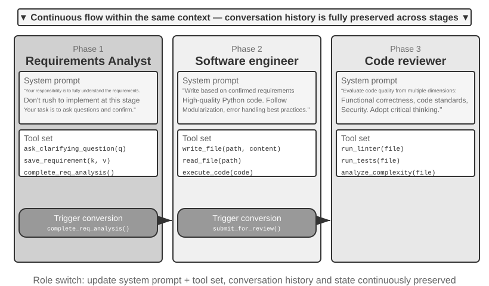
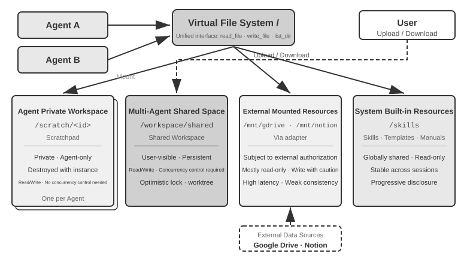
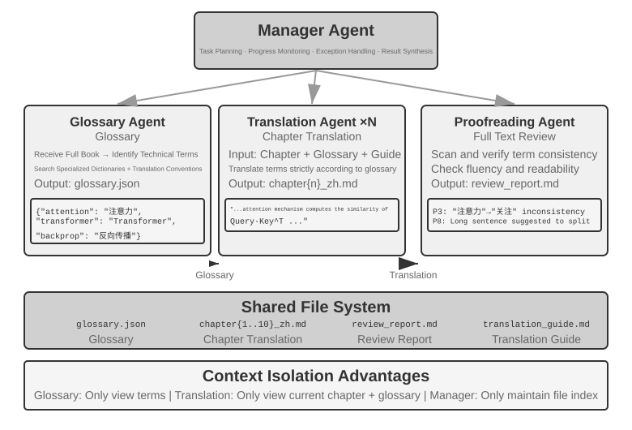
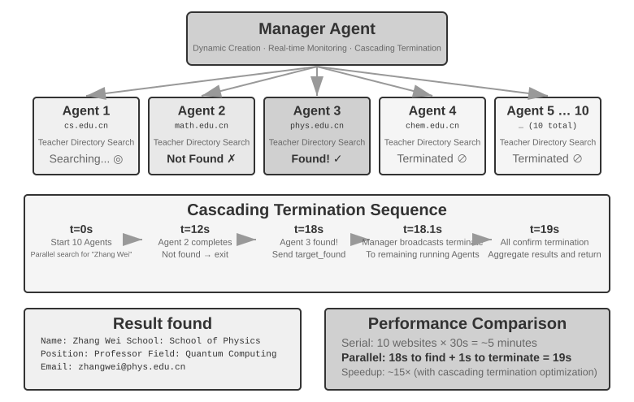
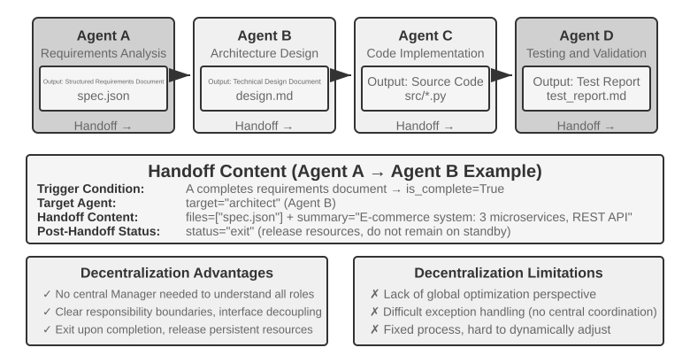
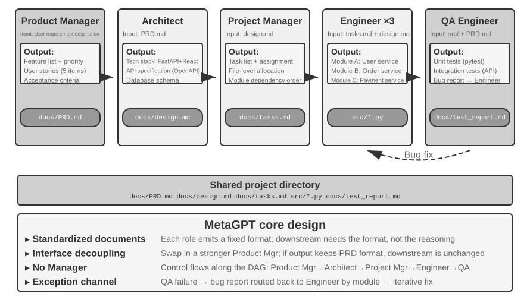
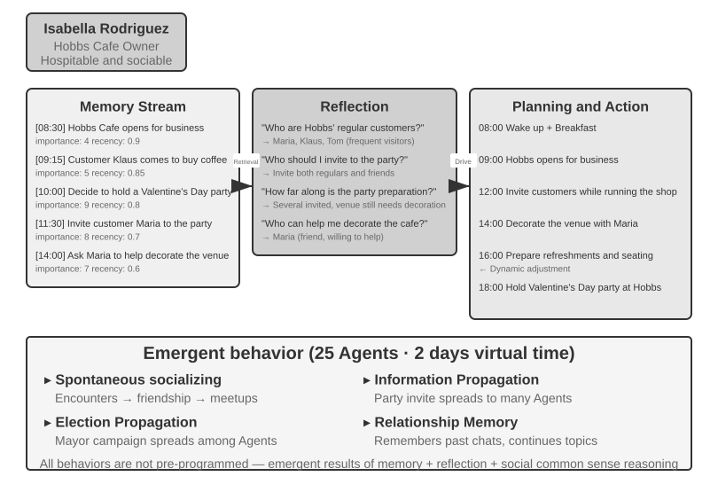
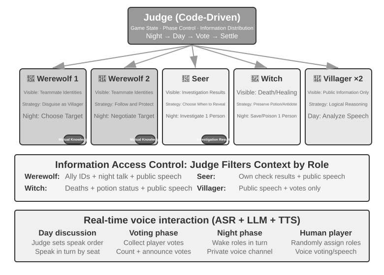

Çoklu Agent İş Birliği¶
OpenAI'ın bir zamanlar öne sürdüğü beş kademeli yapay zeka yetenek tanımında (Level 1 sohbet ediciler, Level 2 düşünenler (Reasoners), Level 3 Agent'lar, Level 4 yenilikçiler, Level 5 organizasyonlar — Organizations), çoklu Agent iş birliği çoğu zaman beşinci seviyeye giden yollardan biri olarak gösterilir. Şunu belirtmek gerekir: buradaki Organizations, bir sistem mimarisi gereksinimini değil, "yapay zekanın bütün bir organizasyonun işini yapabilmesi" anlamındaki bir yetenek seviyesini ifade eder; yeterince güçlü tek bir Agent da teoride bu seviyeye ulaşabilir. Ne var ki bugünün mühendislik gerçekliğinde tek bir Agent, nihayetinde kendi modelinin yetenek sınırlarıyla ve context penceresiyle kısıtlı kalır.
Birden fazla Agent'ı birlikte çalıştırmanın anlamı, farklı uzmanlıklara sahip Agent'ların "birbirinin eksiğini kapatmasından" çok daha fazlasıdır. Daha temel olan nokta şudur: grubun zekası bireyinkini aşabilir. İnsan uygarlığı bunun kanıtıdır — tek bir insanın zekası sınırlıdır, ama iş bölümü, iş birliği, tartışma ve bilginin kuşaklar boyu birikmesi sayesinde insan toplumunun bir bütün olarak sergilediği zeka, herhangi bir dahi bireyinkinin çok ötesindedir. Agent toplulukları da benzer bir kolektif zeka ortaya çıkarabilir: her bir Agent yalnızca bir insan uzman düzeyinde olsa bile, düzgün örgütlendiği sürece topluluğun bütünsel yeteneği tüm insan uzmanların toplamını aşabilir. Google DeepMind, From AGI to ASI çalışmasında "büyük ölçekli çoklu Agent toplulukları"nı süper zekaya (ASI) giden kilit yollardan biri olarak sıralar — insanın genel zekasının bireyi aşan toplum ve organizasyonlara dönüşebilmesi gibi, AGI seviyesindeki çok sayıda Agent'ın birlikte oluşturduğu "topluluk zekası" da üyelerinin basit toplamının çok ötesinde bilişsel yetenekler sergileyebilir1. Dolayısıyla çoklu Agent iş birliği, yalnızca tek bir modelin context penceresini ve yetenek sınırlarını aşmaya yarayan bir mühendislik yöntemi değil; "uzman seviyesinde yapay zeka"dan "insanlığın bütününü aşmaya" uzanan temel bir yol da olabilir.
Çoklu Agent İş Birliğinin Sınıflandırma Çerçevesi¶
Bir çoklu Agent sistemi kurmak için önce iki temel tasarım boyutunu anlamak gerekir; bu ikisi birlikte sistemin temel mimarisini ve gerçeklenme biçimini belirler.
Boyut Bir: Context Paylaşılıyor mu?¶
Bu, en temel mimari karardır ve birden fazla Agent arasında bilginin nasıl aktarılacağını belirler.
Paylaşılan context, sonraki Agent'ın kendinden önceki Agent'ın eksiksiz konuşma geçmişini ve trajectory'sini (Bölüm 1'de tanımlanan trajectory) devraldığı anlamına gelir. Her aşamada system prompt ve araç kümesi değiştikten sonra ortaya yeni bir Agent çıkar (çünkü kimliği, sorumlulukları ve yetenekleri değişmiştir), ama selefinin bütün belleğini korur. Örneğin bir ekipte gereksinim analisti gereksinim dokümanını yazdıktan sonra geliştirici yalnızca dokümanı almakla kalmaz, analistin kullanıcıyla yaptığı bütün yazışmaları da görebilir — yeni bir roldedir, ama önceki context'i eksiksiz korumuştur. Üstünlüğü bilginin kaybolmamasıdır; her Agent önceki herhangi bir aşamanın ayrıntılarına dönüp bakabilir. Zorluğu ise context'in hızla şişebilmesidir.
Paylaşılmayan context, her Agent'ın tamamen bağımsız bir context ve konuşma geçmişi tuttuğu, birbirlerinin "düşünme sürecine" doğrudan erişemediği anlamına gelir. Bu, farklı departmanlar arasındaki iş birliğine benzer: herkes kendi masasında bağımsız çalışır, bilgiyi başkasının ekranını sürekli izleyerek değil, paylaşılan dokümanlar ve toplantı notları üzerinden alışverişe sokar. Bu modelin modülerliği ve izolasyonu daha iyidir; her Agent'ın yalnızca kendi sorumluluğuyla ilgili bilgiye odaklanması yeterlidir. Sistemin genişletilmesi ve bakımı da kolaylaşır — yeni bir Agent eklemek mevcut Agent'ların iç mantığını değiştirmeyi gerektirmez, yalnızca arayüzlerin ve veri formatlarının iyi tanımlanmasını gerektirir.
Agent'lar context paylaşmadığı için bilginin açık iletişim mekanizmalarıyla aktarılması zorunludur. Bu sorunun yanıtı klasik dağıtık sistemlerde çoktan verilmişti: işletim sistemi ders kitapları bize süreçler arası iletişimin (IPC) nihayetinde yalnızca iki paradigmadan ibaret olduğunu söyler — paylaşılan bellek (bir taraf yazar, diğer taraf aynı depolama bloğunu okur) ve mesaj geçirme (veri açıkça karşı tarafa gönderilir). Agent'lar arası iletişim mekanizmaları da bu iki paradigmanın içine düşer; yaygın olarak üç tanesi görülür:
- Araç çağrısının parametreleri: Yukarı akıştaki Agent yapılandırılmış veriyi, aşağı akıştaki Agent'ın aracına parametre olarak geçirir; tipi kesin, yapısı net veri gerektiren senaryolara uygundur;
- Paylaşılan dosya sistemi: Agent'lar paylaşılan bir dizindeki doküman, kod gibi ara ürünleri okuyup yazarak bilgi alışverişi yapar; ürünlerin büyük olduğu ya da kalıcılık gereken senaryolara uygundur;
- Message bus (mesaj veri yolu): Agent'lar arasında mesaj taşımakla özel olarak görevlendirilmiş bir aktarma istasyonudur; Agent'lar birbirini doğrudan çağırmaz, mesajı message bus'a gönderir, o da mesajı hedef Agent'a iletir.
IPC'nin iki paradigmasına karşılık gelecek şekilde: paylaşılan dosya sistemi Agent dünyasının "paylaşılan belleği"dir; araç çağrısı parametreleri ile message bus ise "mesaj geçirme"nin iki biçimidir — ilki çağrıyla birlikte senkron olarak iletilir, ikincisi aktarma istasyonu üzerinden asenkron olarak teslim edilir. İki paradigmanın da kendi ödünleşimleri vardır. Go dilinin çok bilinen bir sözü vardır: "Belleği paylaşarak iletişim kurmayın; iletişim kurarak belleği paylaşın" — paylaşılan bellek hızlıdır, ama eşzamanlılık çakışması riskini kullanıcısına bırakır; mesaj geçirme daha fazla orkestrasyon kodu yazmayı gerektirir, ama verinin kime ait olduğunu izlenebilir kılar. Bu ödünleşim, ilerideki durum sorgulama ve eşzamanlılık çakışması konularında tekrar tekrar karşımıza çıkacak.
Message bus doğası gereği asenkron iletişimi destekler — gönderen ve alan tarafın aynı anda çevrimiçi olması gerekmez; tıpkı şirket içi e-posta sistemi gibi: bir iş arkadaşınıza e-posta gönderdiğinizde onun o anda bilgisayarının başında olması gerekmez, e-posta önce sunucuda durur, iş arkadaşınız çevrimiçi olunca işler. Bu yaklaşım özellikle birden fazla Agent'ın paralel çalıştığı ve birbiriyle koordine olması gereken senaryolara uygundur (bu bölümdeki "paralel koordinasyon" kısmına bakın).

Şunu netleştirmek gerekir: iki mimari de gerçek birer çoklu Agent sistemidir (çünkü her aşamanın system prompt'u ve araç kümesi farklıdır, dolayısıyla farklı Agent'lardır); fark koordinasyon biçimindedir. Paylaşılan context örtük koordinasyona dayanır — sonraki Agent'lar önceki Agent'ların eksiksiz context geçmişini devralır, önceki düşünme sürecini "görebilir", bilgi context'in kendisi üzerinden aktarılır. Paylaşılmayan context açık koordinasyona dayanır — Agent'lar dosyalar, mesajlar veya yapılandırılmış veri arayüzleri üzerinden bilgi alışverişi yapar ve her Agent yalnızca kendisiyle ilgili içeriği görür.
Bir benzetme: ilki bir ekibin aynı masanın etrafına oturup tartışmasına, herkesin her sözü duymasına benzer; ikincisi farklı departmanların e-posta ve dokümanlarla iş birliği yapmasına, her birinin kendi çalışma alanının olmasına benzer.
İşletim sistemlerine aşina okurlar bu ikilemi tanıyacaktır: paylaşılan context thread'dir, paylaşılmayan context process'tir. Thread'ler adres uzayını paylaşır, geçiş maliyeti düşüktür, iletişim kopyalama gerektirmez; bedeli izolasyonun olmamasıdır — bir thread belleği bozarsa bütün process onunla birlikte çöker. Process'lerin her birinin bağımsız adres uzayı vardır, izolasyon tamdır, güvenle paralel çalışılabilir; bedeli iletişimin açık IPC'den geçmek zorunda olmasıdır. Tablo 10-1'deki her seçim ölçütü bu ödünleşim kümesinden türetilebilir.
Tablo 10-1, iki mimarinin seçim ölçütlerini alt görev sayısı, context penceresi, paralellik derecesi, bilgi izolasyonu ve maliyet bütçesi olmak üzere beş açıdan özetler; erken mimari seçimi için bir kontrol listesi olarak kullanılabilir.
Tablo 10-1 Paylaşılan Context ile Paylaşılmayan Context Arasındaki Seçim Ölçütleri
| Seçim Ölçütü | Paylaşılan Context | Paylaşılmayan Context |
|---|---|---|
| Alt görev sayısı | Az (2-3 rol) | Çok (paralel işleme gerekir) |
| Context penceresi | Bütün rollerin bilgisini alacak kadar geniş | Tek pencereye sığmaz |
| Paralellik derecesi | Ağırlıklı olarak seri (roller aynı trajectory boyunca sırayla bayrağı devralır) | Büyük ölçekte paralelleşebilir (context'ler birbirinden bağımsız, birbirini engellemez) |
| Bilgi izolasyonu | Gerekmez (bütün roller bilgiyi paylaşır) | Gerekir (örneğin güvenlik incelemesi ham düşünme sürecini görmemeli) |
| Maliyet bütçesi | Tek trajectory bayrak yarışı gibi devredilir, token aşamalarla birikir | Çoklu Agent'lar ayrı ayrı açılır, toplam token genellikle birkaç kat ile bir büyüklük mertebesi arasında daha yüksektir |
Basit karar kuralı: Beklenen birikimli context'in pencerenin %50'sini aşacağı düşünülüyorsa (bu kesin bir eşik değil, bir deneyim kuralıdır) paylaşmayın; bilginin sıfır kayıpla aktarılması görevin doğruluğu için katı bir kısıtsa paylaşın; gerçek sistemlerin çoğu "aşamalı geçiş" yaklaşımını benimser — ilk birkaç Agent context paylaşır, bilgi doygunluk noktasına gelindiğinde paylaşılmayan context artı açık handoff'a (devir; yani hangi bilginin aşağı akışa aktarılacağına yukarı akıştaki Agent'ın kendisinin karar vermesi) geçilir.
Boyut İki: İş Birliği Topolojisi¶
İkinci boyut iş birliği topolojisidir — Agent'lar arasında kontrolün ve bilginin hangi yapı üzerinden aktığı. İş birliği topolojisi ile context'in paylaşılıp paylaşılmaması kavramsal olarak bağımsız, pratikte ilişkilidir: kavramsal olarak bağımsızdır, çünkü context paylaşan sistemlerin de bir topolojisi vardır; örneğin bu bölümde ileride tanıtılan transfer_to_agent (Deney 10-2) özünde zincirleme devrin (handoff) paylaşılan context altındaki biçimidir. Pratikte ilişkilidir, çünkü context bir kez paylaşıldığında topoloji çoğunlukla yozlaşır (aşağıya bakın) ve iki boyutun değerleri istenildiği gibi birleştirilemez. Yalnız şu var ki context paylaşıldığında devrin "ne aktarılacağına" karar vermesi gerekmez — eksiksiz geçmiş zaten korunur — bu yüzden topoloji genellikle bir rol değiştirme dizisine yozlaşır ve yapılacak fazla mimari karar kalmaz (ikisinin arasında duran bir istisna, group chat tarzı çok taraflı iş birliğidir; bu bölümün ilerideki merkezsizlik kısmına bakın). Context paylaşılmadığı anda ise "bilginin nasıl akacağı, koordinasyonu kimin yapacağı" açıkça tasarlanması gereken bir soruna dönüşür.
Başka bir deyişle bu iki boyut ilkesel olarak 2×3'lük bir birleşim matrisi oluşturur (paylaşılan/paylaşılmayan × üç topoloji), ama paylaşılan context satırında topoloji çoğunlukla bir rol değiştirme dizisine yozlaşır ve geriye pek mimari karar kalmaz (ileride "çok aşamalı rol değiştirme" başlığı altında tartışılan biçim tam da budur). Bu nedenle bu bölüm yalnızca paylaşılmayan context'in üç hücresini ayrıntılandırır. Aşağıda tanıtılanlar, iş birliği topolojisinin paylaşılmayan context altındaki üç tipik biçimidir; karmaşıklık sırasına göre:
- Eşler arası iş birliği modeli (Peer Collaboration Pattern): Az sayıda Agent (genellikle 2-3) eşit statüde etkileşir ve yinelemeli bir iyileştirme döngüsü oluşturur — tıpkı makale yazarken birinin taslağı çıkarması, diğerinin şerh düşüp düzeltmesi gibi; birkaç turdan sonra kalite tek kişinin kafasını gömüp yazmasının çok üstüne çıkar.
- Yönetici modeli (Orchestration Pattern): Merkezîleşmiş bir Manager Agent görev planlama ve zamanlamadan sorumludur, birden fazla alt Agent ise belirli alt görevleri üstlenir — tıpkı bir proje yöneticisinin birkaç uzman mühendisle proje yürütmesi gibi.
- Merkezsiz model (Decentralized Pattern): Çalışma zamanında merkezî bir denetleyici yoktur; Agent'lar tıpkı insanlar gibi birbiriyle iletişim kurarak görevi birlikte tamamlar.
Her modelin ayrıntılı tasarımı ve uygun olduğu senaryolar ilerideki özel alt başlıklarda ele alınacak.
Çoklu Agent Tek Agent'tan Ne Zaman Gerçekten Üstündür¶
Somut iş birliği mimarilerine geçmeden önce daha temel bir soruyu yanıtlayalım: Ne zaman gerçekten birden fazla Agent'a ihtiyaç var, ne zaman bir Agent yeter? Bu sorunun yanıtı, ilerideki bütün mühendislik çözümlerinin genel referans noktası olacak. Son yılların bir dizi araştırması net bir karar çerçevesi ortaya koyuyor — çekirdek ölçüt tek bir şey: İş birliği süreci, tek bir Agent'ın üretim anında elde edemeyeceği yeni bir bilgi getiriyor mu?
Tablo 10-2, farklı iş birliği modellerinin yeni bilgi getirip getirmediğini özetler; çoklu Agent iş birliğinin tek Agent'a göre esaslı bir değer taşıyıp taşımadığını değerlendirmek için kullanılır.
Tablo 10-2 Çoklu Agent İş Birliği Modellerinin Bilgi Kazanımı Karşılaştırması
| İş Birliği Modeli | Yeni Bilgi Getiriyor mu | Etki |
|---|---|---|
| Aynı modelin kendini incelemesi (kendi çıktısını yeniden okuması) | Hayır | Genellikle etkisiz, hatta zararlı |
| Farklı Agent'ların aynı metin üzerinde tartışması | Hayır | Eşit hesaplama yükünde tek Agent'la başa baş |
| Reviewer'ın test yürütme sonuçlarıyla kodu incelemesi | Evet (yürütme geri bildirimi) | Belirgin iyileşme |
| Reviewer'ın render edilmiş ekran görüntüsüne bakarak frontend/PPT kodunu incelemesi | Evet (görsel geri bildirim) | Belirgin iyileşme |
| Reviewer'ın dış araçlarla olguları doğrulaması | Evet (araç geri bildirimi) | Belirgin iyileşme |
2025 yılının RLEF'i (Reinforcement Learning from Execution Feedback)2 bunu doğruladı: modeli, kod yürütme geri bildirimini kullanarak kodu yinelemeli biçimde iyileştirmek üzere pekiştirmeli öğrenmeyle eğitmek, modele bağımsız olarak birçok kez örnekleme yaptırmaktan çok daha iyi sonuç verdi. Kilit nokta, her yinelemenin gerçek yürütme sonuçlarını (derleme hataları, test başarısızlıkları, çalışma zamanı istisnaları) getirmesidir; bu bilgiler model kodu yazarken mevcut değildi. 2025 yılının WebGen-Agent'ı 3 web sayfası üretme görevinde, çok katmanlı görsel geri bildirimden (ekran görüntüsü artı görsel dil modeli açıklaması) oluşan bir geri bildirim iskelesiyle, bildirildiğine göre Claude 3.5 Sonnet'in bu benchmark'taki performansını %26,4'ten %51,9'a çıkardı — neredeyse iki katına.
Bu "yeni bilgi" çerçevesi, görünüşte çelişkili bir olguyu açıklıyor: akademik araştırmalar "tek Agent yeter" diyor, ama mühendislik pratiğinde çoklu Agent gerçekten daha iyi sonuç veriyor. Çelişkinin kaynağı, ikisinin farklı tipte "çoklu Agent"lardan söz etmesi — akademik araştırmalarda karşılaştırılanlar çoğunlukla "birden fazla Agent'ın aynı metne bakıp birbiriyle tartışması" modelidir (tartışma gibi), oysa mühendislik pratiğinde etkili olan çoklu Agent sistemleri genellikle dış geri bildirim döngüleri (kod yürütme, görsel render, araç çağırma) içerir. İlki yeni bilgi getirmez, ikincisi getirir. Bu bölümde ileride tanıtılacak eşler arası iş birliği, yönetici ve merkezsiz mimarilerin gerçekten işe yarayan kullanımlarının neredeyse tamamı bu ölçüt üzerinde bir yere oturtulabilir.
Adım bütçesi ve Agent performansı. İlgili bir araştırma yönü şudur: Agent'a farklı adım bütçeleri (yani izin verilen araç çağrısı sayısı veya yineleme turu) vermek performansını nasıl etkiler? Sezgisel olarak daha çok adım daha iyi sonuç getirmelidir — 30 adımlık bütçede Agent ancak çekirdek işlevi hızlıca gerçekleştirebilir, 300 adımlık bütçede önce planlama yapıp sonra gerçekleştirebilir, test edebilir, iyileştirebilir. Ama Google'ın 2025 tarihli Budget-Aware Tool-Use Enables Effective Agent Scaling makalesi sezgiye aykırı bir sonuç buldu: Agent'ın kullanabileceği adım sayısını artırmak tek başına performans artışını garanti etmiyor. Standart Agent'lar "bütçe farkındalığından" yoksundur — 300 adımlık bütçeleri olsa bile yüzeysel arama yapma eğilimini sürdürür ve çok geçmeden "doyuma" ulaşırlar. Daha fazla adımın gerçekten daha iyi sonuca dönüşmesi için Agent'ın, kalan kaynağa göre stratejisini dinamik olarak ayarlayan açık bir bütçe farkındalığı mekanizmasına ihtiyacı vardır: başlangıçta geniş keşif, sonrasında en umut vaat eden yöne odaklanma. 2026 tarihli BAVT (Budget-Aware Value Tree Search) bir adım daha ileri giderek adım düzeyinde değer değerlendirmesi önerdi; her adımda kalan bütçe oranına göre keşif ile sömürünün ağırlığını ayarlıyor — bütçe azaldıkça Agent "geniş ağ atmaktan" giderek "derin kazmaya" geçiyor.
Bu bulguların çoklu Agent sistem tasarımı için doğrudan yol gösterici bir anlamı var. Örneğin yönetici modelinde Manager Agent, görevleri alt Agent'lara dağıtıp sonucu beklemekle yetinmemeli, görevin karmaşıklığına göre adım bütçesini dinamik olarak dağıtmalıdır — basit alt görevlere daha az, karmaşık alt görevlere bol adım. Aynı zamanda alt Agent'ları bu bütçeyi makul kullanmaya yönlendirmelidir (önce planla, sonra gerçekleştir, sonra test et, sonra iyileştir); doğrudan dalıp işe girişmeye değil.
Bütün tasarımların önüne konulması gereken bir şey daha var: maliyet. Çoklu Agent'ın paralel keşfi ve tekrarlı yinelemesi para harcar — Anthropic, çoklu Agent araştırma sisteminin token tüketiminin normal bir konuşmanın yaklaşık 15 katı olduğunu ve token kullanımının tek başına performans farkının yaklaşık %80'ini açıkladığını paylaşmıştı. Bu, çoklu Agent'ın getirdiği kazancın, birkaç kat hatta bir büyüklük mertebesi ek maliyeti karşılayacak kadar büyük olması gerektiği anlamına gelir; aksi halde iyi ayarlanmış tek bir Agent çoğu zaman daha hesaplı bir seçimdir.
Paylaşılan Context'li Çoklu Agent İş Birliği¶
Paylaşılan context'li çoklu Agent iş birliğinde her aşama bağımsız bir Agent'tır (kendi system prompt'u ve araç kümesi vardır), ama kendinden önceki Agent'ın eksiksiz trajectory'sini devralır — tıpkı vardiyayı devralan bir iş arkadaşının selefinin bıraktığı bütün çalışma kayıtlarını karıştırabilmesi gibi. Bu "devralmalı iş birliği"nin temel üstünlüğü bilgide sıfır kayıptır; her Agent önceki herhangi bir aşamanın ayrıntısına dönüp bakabilir. Zorluk ise mevcut Agent'ı, devraldığı büyük hacimli geçmiş bilgiyle dikkati dağılmadan kendi çekirdek sorumluluğuna odaklı tutmaktır.
Çok Aşamalı Rol Değiştirme¶
Önce bir tanım tartışmasını açığa çıkaralım: Bölüm 1'in diliyle söylersek çok aşamalı rol değiştirme workflow tarzı bir orkestrasyondur — yürütme yolu (örneğin gereksinim netleştirme → gerçekleştirme → inceleme) önceden tanımlanmıştır. Process açısından bakıldığında daha da nettir: bu, tek bir process'in farklı aşamaların kodunu sırayla yürütmesidir — değişen kod bölümüdür, bellek baştan sona aynıdır, çok process'li bir yapı değildir. Dolayısıyla bunu "gerçek çoklu Agent" saymayan görüşün haklı bir yanı var. Bu bölüm yine de onu çoklu Agent çerçevesine dahil ediyor, çünkü bunun somut bir tasarım getirisi var: her aşamanın system prompt'u, araç kümesi ve odağı farklı olduğunda, aşamaları aynı trajectory'yi paylaşan birden fazla Agent olarak görmek her "kimliğin" prompt'unun ve araç kümesinin bağımsız olarak inceltilmesine imkân verir; aşama sınırları da doğal olarak kalite kontrol noktalarına dönüşür.
Karmaşık görevlerde Agent'ın rolü ve sorumlulukları farklı aşamalarda belirgin biçimde değişebilir. Baştan sona tek bir statik system prompt kullanılırsa, ya fazla genel kalıp hedefe yönelmez ya da bütün aşamaların yönergeleri bir araya tıkıştırıldığından aşırı uzun olur. Çok aşamalı rol değiştirmenin yaptığı şudur: mevcut aşamaya göre system prompt'u ve araç kümesini dinamik olarak değiştirmek, böylece Agent her aşamada en uygun "kimlikle" çalışır. Bu değişim yeni bir örnek oluşturmayı veya yeni bir process başlatmayı gerektirmez; yalnızca aynı yürütme oturumu içinde context'i günceller. Kilit nokta şudur: rol değişse de konuşma geçmişi ve görev durumu baştan sona sürekli biçimde paylaşılır — Agent yeni rolünde de önceki aşamalarda biriken bütün bilgiye erişebilir.

Deney 10-1 ★★: Yürütme Aşamasına Göre System Prompt Belirleme
Bu deney, bir Kodlama Agent'ının eksiksiz iş akışı üzerinden, aşamalandırılmış system prompt'ların Agent'ın performansını nasıl artırdığını gösterir.
Görev Senaryosu: Kullanıcı bir yazılım geliştirme talebi ortaya koyar; Agent sırayla üç aşamadan geçer: gereksinim netleştirme, kod gerçekleştirme, kalite incelemesi.
Birinci Aşama: Gereksinim Netleştirme (rol: gereksinim analisti)
System prompt şunları vurgular: - "Senin sorumluluğun kullanıcının ihtiyacını tam olarak anlamaktır. Belirsiz noktaları netleştirmek için sorular sor; kullanıcının beklediği işlevi, kullanım senaryolarını ve performans gereksinimlerini eksiksiz kavradığından emin ol." - "Gerçekleştirmeye acele etme. Bu aşamada görevin soru sormak ve teyit almaktır, kod yazmak değil." - "Bütün kritik gereksinimlerin netleştiğini teyit ettiğinde, bu aşamayı bitirmek için
complete_requirements_analysis()aracını çağır."Araç kümesi sınırlıdır: kullanıcıya netleştirici soru sormak için
ask_clarifying_question(question), teyit edilen gereksinim maddelerini kaydetmek içinsave_requirement(key, value), aşamanın tamamlandığını işaretlemek içincomplete_requirements_analysis().Agent kullanıcıyla çok turlu bir konuşma yürütür: "Bu betik hangi tür dosyaları işleyecek?" "Alt klasörler özyinelemeli olarak işlensin mi?" "Dosyalar taşındıktan sonra orijinal dosya adları korunsun mu?" Bu sorular sayesinde Agent adım adım eksiksiz bir gereksinim anlayışı kurar ve bunu yapılandırılmış biçimde kaydeder. Agent gereksinimlerin yeterince netleştiğine kanaat getirdiğinde
complete_requirements_analysis()çağırarak rol değişimini tetikler — sistem aşamanın tamamlandığı sinyalini algılar ve otomatik olarak sonraki aşamanın yapılandırmasına geçer.İkinci Aşama: Kod Gerçekleştirme (rol: yazılım mühendisi)
Yeni system prompt şunları vurgular: - "Senin sorumluluğun, teyit edilmiş gereksinimlere dayanarak yüksek kaliteli Python kodu yazmaktır." - "En iyi pratikleri izle: kod modüler olmalı, uygun hata işleme içermeli, gerekli yorumları barındırmalı." - "Kodu yazmayı bitirip temel testleri geçtikten sonra, inceleme aşamasına geçmek için
submit_for_review()çağır."Araç kümesi belirgin biçimde değişir: önceki gereksinim netleştirme araçları kaldırılır, yerlerine
write_file(path, content),read_file(path),execute_code(code)gibi geliştirme araçları gelir. Agent, birinci aşamada kaydedilen gereksinimlere dayanarak kod yazmaya başlar — önce ana mantığı yazar, sonra hata işleme ekler, en sonunda doğrulama için test yazar. Süreç boyunca Agent birinci aşamanın konuşma geçmişine erişip gereksinim ayrıntılarına dönüp bakabilir, ama davranış kalıbı tamamen farklıdır: artık soru sormaz, gerçekleştirmeye odaklanır. Bitirdikten sonrasubmit_for_review()çağırır.Üçüncü Aşama: Kod İncelemesi (rol: kod inceleyici)
Yeni system prompt şunları vurgular: - "Senin sorumluluğun az önce yazılan kodu incelemek ve kalitesini birden fazla boyutta değerlendirmektir: işlevsel doğruluk, kod standartlarına uygunluk, hata işleme, performans optimizasyonu, güvenlik." - "Eleştirel düşün; kodda bulunabilecek sorunları ve iyileştirme alanlarını bulmaya çalış." - "Ciddi bir sorun bulursan
request_revision(issues)çağırıp düzeltme için gerçekleştirme aşamasına dön; kalite kabul edilebilirseapprove_code()çağırıp görevi tamamla."Araç kümesi yeniden değişir: yerini
run_linter(file),run_tests(file),analyze_complexity(file)gibi kod kalitesi analiz araçları alır. Agent koda inceleyici gözüyle yeniden bakar, statik analiz çalıştırır, olası bug'ları, performans sorunlarını veya güvenlik açıklarını tarar.Bu üç aşamalı tasarım, Agent'ın her aşamada o anki çekirdek göreve odaklanmasını sağlar. Daha da önemlisi, net aşama geçiş mekanizması görevin eksiksiz yürütülmesini güvence altına alır — Agent gereksinim analizini atlayıp doğrudan kod yazmaz, incelemeden geçmemiş bir sonucu da teslim etmez.
Deney Gereksinimleri: 1. Her aşamada net bir rol tanımı ve davranış yönergesi bulunan üç aşamalı system prompt'ları gerçekleştirin 2. Her aşama için eşleşen araç kümesini yapılandırın 3. Aşama geçişini tetikleyen mekanizmayı gerçekleştirin (belirli araç çağrıları üzerinden) 4. Context'in aşamalar arasındaki sürekliliğini güvence altına alın 5. Geri dönüş durumlarını ele alın — kod incelemesi sorun bulduğunda gerçekleştirme aşamasına dönülebilsin 6. Her aşamanın yürütme günlüğünü kaydedin; farklı prompt'ların farklı davranış kalıplarını nasıl ürettiğini gösterin
Alanlar Arası Rol Değiştirme¶
Önceki çok aşamalı rol değiştirme, tek bir görev tipi (yazılım geliştirme) içindeki aşamalandırılmış yürütmeyi gösteriyordu. Alanlar arası rol değiştirme ise bir adım daha ileri giderek Agent'ın birden fazla görev tipi arasında otonom geçiş yapmasını inceler — artık önceden planlanmış doğrusal bir akış değil, kullanıcının değişen ihtiyacına göre hangi uzman role geçileceğine Agent'ın kendisinin karar vermesi söz konusudur.
Deney 10-2 ★★: Çoklu Rol Değiştirme
Ön Koşul: Önce Bölüm 2'deki Agent Skills mekanizmasını incelemeniz önerilir.
Sistem Mimarisi: Beş rol —
- triage (ön masa triyajı, varsayılan giriş noktası): Kullanıcının bütünsel ihtiyacını anlar, onu sıraya konmuş alt görevlere böler, adım adım uygun uzman rollere devreder ve bütün alt görevler bittikten sonra kapanış teyidini yapar. Kendine ait uzman aracı yoktur, yalnızca transfer aracını taşır
- research (bilgi arama uzmanı):
web_searchile veri, olgu ve kaynak arar- coding (programlama uzmanı):
execute_pythonile kod yazıp çalıştırır, program mantığı ve betik türü sorunları çözer- data_analysis (veri analizi uzmanı):
calculate/descriptive_statsile niceliksel hesaplama ve istatistik yapar (yıllık büyüme oranı, yıllık bileşik büyüme oranı CAGR, ortalama gibi)- writing (yazım uzmanı): Bulunan verileri ve hesap sonuçlarını, belirtilen okur kitlesine yönelik akıcı bir metne dönüştürür (uzunluğu kabaca kontrol etmek için
count_characterskullanılabilir)Çekirdek Mekanizma: transfer_to_agent Aracı
Bütün roller
transfer_to_agent(target_role, reason)aracıyla donatılmıştır. Çağrıldığında sistem sırayla şunları yapar: 1) mevcut konuşma geçmişini kaydeder; 2) hedef rolün prompt'unu ve araç kümesini yükler; 3) konuşma geçmişini yeni role aktararak context'i anlamasını sağlar; 4) yeni rol kimliğiyle yürütmeye devam eder.Deney Senaryosu: Sistem varsayılan olarak triage (ön masa triyajı) kimliğiyle çalışır. Kullanıcı alanlar arası bileşik bir görevle gelir: "Yatırımcılara sunacağım bir materyal hazırlıyorum; Çin'in 2021, 2022 ve 2023 yıllarındaki yeni enerjili araç satışlarını bulup bu üç yılın yıllık bileşik büyüme oranını hesaplar mısın, sonra da yatırımcılara yönelik, 120 karakteri geçmeyen Çince bir özet yazar mısın." triage bunu "veriyi bul → metriği hesapla → metni yaz" biçiminde ayırır ve ilk adımda aramayı devreder:
transfer_to_agent(target_role="research", reason="önce üç yılın yeni enerjili araç satış verilerinin bulunması gerekiyor")research
web_searchile satış rakamlarını bulduktan sonra kilit verileri konuşmaya yazar ve veri analizine devreder:transfer_to_agent(target_role="data_analysis", reason="veri hazır, üç yıllık CAGR'ın hesaplanması gerekiyor")data_analysis
calculateile büyüme oranını hesaplar ve metnin yazılması için writing'e devreder; writing metni yazdıktan sonra kapanış teyidi için triage'a geri devreder. Zincirin tamamı triage → research → data_analysis → writing → triage biçimindedir; her rol eksiksiz konuşma geçmişini görebildiği için sonraki rol önceki adımlarda ne yapıldığını doğal olarak bilir.Rol değiştirme kararı system prompt'un yönlendirmesine dayanır. triage'ın prompt'unda yönlendirme kuralları açıkça sıralanmıştır: veri ve kaynak arama research'e, kod yazıp çalıştırma coding'e, niceliksel hesaplama ve istatistik data_analysis'e, metni düzenleyip yazma writing'e. Ölçüt basittir: görev belirli bir alanda derin bilgi veya uzman araç gerektiriyorsa ilgili uzman role devredilir. Uzman rollerin prompt'ları da kendi paylarına düşen işi bitirdikten sonra kime devredeceklerini veya triage'a nasıl döneceklerini belirtir.
Deney Gereksinimleri: 1. En az üç uzman rolün system prompt'unu ve özel araç kümesini gerçekleştirin 2. Dinamik geçişi destekleyen
transfer_to_agentaracını gerçekleştirin 3. Rol değişiminden sonra context sürekliliğini güvence altına alın 4. Döngüsel geçiş sorununu ele alın — Agent'ın roller arasında tekrar tekrar gidip gelmesini önleyin 5. Rol değiştirmenin değerini gösteren, birden fazla alanı kapsayan karmaşık görev akışları tasarlayın
Paylaşılmayan Context'li Çoklu Agent İş Birliği¶
Paylaşılmayan context gerçek çoklu Agent iş birliğini temsil eder. Bu mimaride her Agent bağımsız bir varlıktır; kendi context'i, trajectory'si ve durumu vardır. Agent'lar birbirinin "iç dünyasına" doğrudan erişemez; iş birliği tamamen açık ve yapılandırılmış veri aktarma mekanizmalarına, yani bu bölümün başında tanıtılan üç iletişim mekanizmasına (araç çağrısı parametreleri, paylaşılan dosya sistemi, message bus) dayanır.
Bu bölümün başında iletişim mekanizmalarını süreçler arası iletişimin iki paradigmasına, paylaşılan ile paylaşılmayan context'i de thread ile process'e karşılık getirmiştik. Bu benzetme daha da ileri götürülebilir (Tablo 10-3):
Tablo 10-3 Çoklu Agent Sistemleri ile İşletim Sistemleri Arasındaki Karşılıklar
| İşletim Sistemi | Çoklu Agent Sistemi |
|---|---|
| Program (yürütülebilir dosya) | Static prefix (system prompt + araç tanımları) |
| Process'in belleği | Trajectory |
| CPU | LLM |
| Çekirdek (kernel) | Agent çalışma zamanı |
| Sistem çağrısı | Araç çağrısı |
| fork (alt process oluşturma) | spawn_subagent |
| kill (sinyal gönderme) | cancel_subagent |
| ps (process'leri listeleme) | list_agents |
| Çıkış kodu ve wait() | Alt Agent'ın döndürdüğü yapılandırılmış özet |
| Paylaşılan bellek / mesaj geçirme | Paylaşılan dosya sistemi / mesaj |
Program statik koddur, process ise programın bir kez çalışmasıdır. Aynı şekilde static prefix Agent'ın kim olduğunu belirler, trajectory ise hangi adıma kadar geldiğini kaydeder. LLM, CPU'nun rolünü oynar: kendisi durum tutmaz, farklı context'leri yükleyerek zaman paylaşılan biçimde pek çok Agent'a hizmet eder — "context switch" (bağlam değiştirme) terimi zaten işletim sistemlerinden ödünç alınmıştır. Tam da bu yüzden, daha hızlı bir CPU takıldığında program eskisi gibi çalışır; daha güçlü bir model takıldığında da Agent yine aynı Agent'tır — kimliği ve belleği prefix ile trajectory'de durur, model ağırlıklarında değil.
Bu soyutlama yeni değil: özel durum, asenkron mesajlar ve yeni üyeler oluşturabilme, 1970'lerin Actor modelinin temel kurgusudur4; çoklu Agent sistemlerini onun LLM sürümü olarak görmekte sakınca yoktur. Bu nedenle işletim sistemlerinin ve dağıtık sistemlerin olgunlaşmış deneyimi büyük ölçüde doğrudan ödünç alınabilir. Tek geçersizleşen nokta şudur: process'ler arasında bayt aktarılır, bit bit sadakatle; Agent'lar arasında ise anlam aktarılır ve her aktarım bir bozulmaya yol açabilir — bu bölümün "başarısızlık kalıpları" kısmının özel olarak ele alacağı yeni sorun budur.
Process tarzı izolasyon birkaç somut mühendislik faydası getirir: her Agent bağımsız olarak geliştirilip test edilebilir, yeni yetenek eklemek mevcut kodu değiştirmeyi gerektirmez, bir Agent arızalandığında hatalı durumu diğer Agent'lara bulaştırmaz ve birden fazla Agent gerçek anlamda eşzamanlı yürütülebilir — context'ler tamamen bağımsız olduğu için kaynak rekabeti oluşmaz.
Ama paylaşılmayan context'in bir bedeli de var. En belirgini bilgi senkronizasyonu sorunudur: Agent'lar görev durumu hakkında tutarlı bir anlayışı nasıl koruyacak? Bilgi aktarım sırasında kaybolur ya da tekrarlanır mı? Hata ayıklama da zorlaşır — bir sorun çıktığında eksiksiz yürütme sürecini kurabilmek için birden fazla Agent'ın günlüğünü taramak gerekir. Bu sorunlar arayüz belirtimlerinin, veri formatlarının ve iletişim protokollerinin tasarımını kritik hale getirir.
Paylaşılmayan context'in açık iş birliği, topolojiden bağımsız iki altyapıya dayanır. Birincisi paylaşılan dosya sistemidir; Agent'lar arasında ürün, kullanıcıyla da dosya alışverişinin kalıcı ortamı olarak iş birliğinin veri düzlemini oluşturur. İkincisi iletişim ve kontrol mekanizmasıdır; Agent'lar arasında mesaj geçirmeyi, durum sorgulamayı, yürütmenin sonlandırılmasını ve kaynak zamanlamasını destekleyerek iş birliğinin kontrol düzlemini oluşturur. Aşağıdaki üç topolojinin hepsi bu ikisinin üzerine kurulur.
Agent'ın Gözünden Dosya Sistemi¶
Bu bölümün başında "paylaşılan dosya sistemi", paylaşılmayan context'in üç iletişim mekanizmasından biri olarak sıralanmıştı. Gerçek sistemlerde Agent'ın eriştiği şey tek bir depolama değil, bir sanal dosya sistemidir (virtual filesystem): kaynağı, yaşam döngüsü ve izinleri farklı olan depolamalar aynı dizin ağacının altına bağlanır (mount edilir), Agent hepsine tek tip read_file/write_file/list_dir arayüzüyle erişir, alt katmanda ise yerel geçici disk, kalıcı nesne depolama, üçüncü taraf bulut diskinin API'si veya salt okunur sistem kaynak paketleri bulunabilir. Bu dizin ağacının bileşimini — her bölgenin görünürlüğünü ve yaşam döngüsünü — netleştirmek, çoklu Agent iş birliği tasarımının ön koşuludur: eşzamanlılık çakışmalarının ve bilgi sızıntılarının azımsanmayacak bir kısmı, izole olması gereken bölgelerin iç içe geçirilmesinden kaynaklanır. Bu dizin ağacı Agent'ın adres uzayına denk düşer; dört bölge türü ise izinleri farklı bellek segmentleridir: kimi özel ve yazılabilir, kimi çok taraflı paylaşılan, kimi salt okunur. İşletim sisteminin koruma felsefesi burada da geçerlidir — varsayılan izolasyon, paylaşım açıkça bildirilmeli. Olgun bir çoklu Agent sisteminin dosya sistemi genellikle şu dört bölge türünden oluşur:
Bir, Agent'a Özel Çalışma Alanı (Scratchpad). Her Agent örneğinin tek başına sahip olduğu özel dizindir; ara ürünleri, geçici dosyaları, taslakları ve hata ayıklama günlüklerini barındırır, yaşam döngüsü örneğe bağlıdır, diğer Agent'lara ve kullanıcıya görünmez. Scratchpad'i izole etmenin iki işlevi vardır: birden fazla Agent'ın geçici dosyalarının birbirinin üzerine yazmasını önlemek ve ana Agent'ın context'ini yalın tutmak — alt Agent'ın deneme yanılma süreci kendi çalışma alanında kalır, paylaşılan alana yalnızca nihai ürün gönderilir. Bu, Bölüm 4'teki "alt Agent tam trajectory yerine yapılandırılmış özet döndürür" ilkesinin depolama katmanındaki karşılığıdır.
İki, Çoklu Agent Paylaşılan Alanı (Shared Workspace). Birden fazla Agent'ın birlikte okuyup yazdığı ve kullanıcıya görünür olan iş birliği bölgesidir; paylaşılmayan context mimarisinde Agent'lar arası ürün alışverişinin başlıca ortamıdır: Glossary Agent terim listesini yazar, Translation Agent oradan okur; kullanıcı da buraya kaynak dosyaları yükleyebilir, nihai teslimatları indirebilir. Yaşam döngüsü görevin tamamına bağlıdır ve kalıcılık gerektirir. Çok taraflı eşzamanlı okuma-yazma bölgesi olduğu için eşzamanlılık çakışmalarının yoğunlaştığı yerdir — iyimser kilitleme, çalışma kopyası izolasyonu (worktree) gibi mekanizmalar burada devreye girer; ayrıntı için bu bölümün ilerideki "başarısızlık kalıbı bir" kısmına bakın. Bölüm 4'te ana Agent'ı, sanal bilgisayarı ve sanal telefonu birbirine bağlayan /workspace/shared birim bağlaması (volume mount), bu katmanın tipik bir uygulamasıdır.
Üç, Dışarıdan Bağlanan Kaynaklar (Mounted External Resources). Kullanıcının erişim yetkisi verdiği üçüncü taraf bilgi kaynakları — Google Drive, Notion, Dropbox, kurumsal wiki vb. — bir adaptör (adapter) aracılığıyla dosya sistemindeki bağlama noktalarına (örneğin /mnt/gdrive) eşlenir. Agent bir Notion dokümanına dosya okur gibi erişir, alt katmanda ise adaptör karşı tarafın API'sini çağırır. Bu katmanı yerel depolamadan ayıran üç özellik tasarımda açıkça ele alınmalıdır: erişim dış izinlere tabidir (kullanıcının kaynak sistemdeki izinleri Agent'ın görebileceği kapsamı belirler), gecikme daha yüksek, tutarlılık daha zayıftır (her okuma bir ağ gidiş dönüşüdür, veri dışarıdan değiştirilmiş olabilir, ancak nihai tutarlılık varsayımıyla ele alınabilir), ağırlıklı olarak isteğe bağlı ve salt okunurdur (dış kaynağa geri yazmak dikkat ister, yanlış bir yazma kullanıcının gerçek verisini kirletebilir). Tek tip dosya arayüzü, Agent'ın her veri kaynağı için özel araç geliştirmesini gereksiz kılar, ama yukarıdaki performans ve güvenlik farklarını da gizler; bu yüzden salt okunur/yazılabilir ayrımı, zaman aşımı ve kimlik bilgisi sınırları bağlama katmanında açıkça yönetilmelidir.
Dört, Sistemle Gelen Kaynaklar (Built-in System Resources). Sistemin önceden yerleştirdiği, bütün Agent'lara salt okunur biçimde paylaştırılan kaynak paketleridir; tipik örneği Bölüm 2 ve Bölüm 4'te tanıtılan Skills'tir — dosya biçiminde örgütlenmiş bilgi dokümanları ve betikler, /skills gibi yollara bağlanır ve aşamalı açığa çıkarmayla (önce dizin, sonra ihtiyaç oldukça açma) kullanılır; bunun dışında başvuru kılavuzları, şablon kitaplıkları ve paylaşılan araç tanımları da bu kapsamdadır. Bu katman küresel olarak paylaşılır, salt okunurdur, oturumlar arası kararlıdır ve eşzamanlılık denetimi gerekmeden bütün Agent'lar tarafından eşzamanlı okunabilir.
Şekil 10-3, bu dört bölgenin aynı dizin ağacı altında tek tip biçimde bağlanmış yapısını gösterir: Agent bütün ağaca tek tip arayüzle erişir, kullanıcı paylaşılan alandan dosya yükleyip indirir, dış veri kaynakları adaptörle bağlanır, sistemle gelen kaynaklar ise salt okunur biçimde sunulur.

Tablo 10-4, bu dört bölgeyi görünürlük, yaşam döngüsü, okuma-yazma izni ve eşzamanlılık denetimi olmak üzere dört boyutta karşılaştırır; dosya sistemi yerleşimi tasarımı için kontrol listesi olarak kullanılabilir.
Tablo 10-4 Agent Sanal Dosya Sisteminin Dört Bölge Türü
| Bölge | Görünürlük | Yaşam Döngüsü | Okuma-Yazma | Eşzamanlılık Denetimi |
|---|---|---|---|---|
| Agent'a özel çalışma alanı | Yalnızca o Agent | Agent örneğiyle birlikte yok olur | Okuma-yazma | Gerekmez (özel) |
| Çoklu Agent paylaşılan alanı | Bütün iş birliği Agent'ları + kullanıcı | Görev boyunca sürer, kalıcılık gerekir | Okuma-yazma | Gerekir (iyimser kilitleme / worktree) |
| Dışarıdan bağlanan kaynaklar | Dış yetkilendirmeye göre değişir | Dış kaynak belirler | Çoğunlukla salt okunur, yazmak dikkat ister | Dış kaynak üstlenir |
| Sistemle gelen kaynaklar | Bütün Agent'lar | Oturumlar arası kararlı | Salt okunur | Gerekmez (salt okunur) |
Dört bölgenin aynı dizin ağacı altında birleştirilmesi, tam da "dosya yolunun evrensel arayüz olarak kullanılması" tasarımının değerini ortaya koyar: Agent'lar arası ürün aktarımı, ana Agent'ın alt Agent'a girdi devretmesi, hatta kurumlar arası A2A iş birliğinde Artifact alışverişi — bunların hepsinde aktarılan şey, içeriğin context penceresine yüklenmesi değil, hafif bir yol dizesidir (Bölüm 4). Bu, Bölüm 5'teki "Agent'ın merkezi olarak dosya sistemi" fikriyle aynı damardan gelir — orada tek bir Agent'ın belleği ve yetenekleri dosya sistemiyle nasıl taşıdığı tartışılıyordu, burada ise aynı soyutlama çoklu Agent'a genişletiliyor: özel, paylaşılan, dış ve yerleşik olmak üzere dört tür depolamanın bağlandığı bir sanal dizin ağacı, çoklu Agent iş birliğinin depolama temelidir.
Agent'lar Arası İletişim ve Kontrol¶
Dosya sistemi Agent'lar arasındaki ürün alışverişi sorununu çözer; iş birliği bir de kontrol düzlemi gerektirir. Tablo 10-3'teki yaşam döngüsü satırları tam da burada işe yarar: oluşturma (spawn_subagent), mesaj gönderme (send_message_to_subagent), iptal etme (cancel_subagent) ve keşfetme (list_agents) — Bölüm 4'te verilen bu araç ilkelleri, process dünyasındaki fork, mesaj, kill ve ps'e karşılık gelir. Bu kısım arayüz tanımlarını tekrarlamayacak; çoklu Agent iş birliğinin dayandığı, ama sıklıkla gözden kaçan dört yeteneğe odaklanacak.
Bir, mesaj geçirme. En yalın biçimi noktadan noktayadır: Agent A doğrudan send_message_to_agent_b(content) çağırır; topolojinin sabit, Agent sayısının az olduğu senaryolara uygundur (bu bölümdeki Deney 10-4'ün telefon artı bilgisayar ikili Agent'ı gibi). Agent sayısı arttığında ve asenkron paralellik gerektiğinde noktadan noktaya bağlantı sayısı Agent sayısının karesiyle büyür, ayrıca gönderen ile alanın aynı anda çevrimiçi olmasını gerektirir; bu durumda message bus'a geçilmelidir (ayrıntı için bu bölümün ilerideki "paralel koordinasyon biçimi" kısmına bakın): Agent mesajı bus'a yayımlar, bus abonelik ilişkisine göre iletir, gönderenin tüketicileri bilmesi gerekmez. İster noktadan noktaya ister bus üzerinden olsun, mesajlar genellikle yapılandırılmış bir zarf (envelope) taşımalıdır: gönderen kimliği, hedef (belirli bir Agent veya yayın), mesaj tipi (task_assigned/status_update/result/terminate gibi) ve JSON yükü. Tek tip zarf formatı, alıcının güvenilir biçimde yönlendirme ve ayrıştırma yapmasını sağlar, iş birliği zincirini de izlenebilir kılar — bu, çoklu Agent sistemlerinde hata ayıklamanın anahtarıdır.
İki, durum sorgulama. Kontrol düzleminin en çok küçümsenen halkası budur. Ana Agent bir alt Agent'ı yola çıkardıktan sonra ilerlemesini öğrenemezse, ne beklemeye devam edip etmeyeceğine karar verebilir ne de alt Agent tıkandığında zamanında müdahale edebilir. Sezgisel yaklaşım RPC'yi olduğu gibi almak, bir get_subagent_status(agent_id) sorgu arayüzü tanımlayıp "çalışıyor/tamamlandı/başarısız" bilgisiyle bir ilerleme yüzdesi döndürmektir. Ama bu çekme tarzı arayüzün pratik faydası beklenenin çok altındadır: alt Agent oluşturulur oluşturulmaz yürütmeye başlar ve tamamlanana veya başarısız olana kadar sürer; geleneksel toplu işlem sistemlerindeki işler gibi bir dizi kuyruk durumu arasında dolaşmaz — nitekim Unix programlamada bir process'in çalışma durumunu PID üzerinden yoklamaya çok nadiren ihtiyaç duyulur. Yoklamanın doğasında bir de ikilem vardır: sık yapılırsa token israf eder, seyrek yapılırsa geç kalır. Durum edinmenin daha doğal yolu, bu bölümün başındaki iki iletişim paradigmasına dönmektir.
Durumu mesaj geçirmeyle edinmek. Ana Agent alt Agent'a doğrudan bir mesaj gönderir: "Durum ne?" Alt Agent uygun bir anda yanıtlar. Her şey asenkrondur: mesaj göndermek kendi yürütmesini engellemez, karşı tarafın ne zaman yanıtlayacağı, hatta yanıtlayıp yanıtlamayacağı ayrı bir konudur — tıpkı bir yöneticinin anlık mesajla astına ilerlemeyi sorması, ama elindeki işi hemen bırakmasını istememesi gibi. Tersine, alt Agent kritik bir noktaya vardığında kendiliğinden mesaj gönderip rapor da verebilir; sistemde zaten bir message bus kurulmuşsa bu, bus'a bir status_update yayımlamak demektir (Deney 10-6'nın "gerçek zamanlı izleme"si bu biçimdedir). İster soru-cevapla ister kendiliğinden raporla olsun, mesajdaki durumun kendisi tek tip bir durum makinesi sözlüğü kullanmalıdır (yürütülüyor, girdi gerekiyor, tamamlandı, başarısız) — bu bölümün ilerideki A2A protokolü de görev yaşam döngüsünü tam olarak böyle bir durum kümesine standartlaştırır.
Durumu paylaşılan dosya sistemiyle edinmek. En köklü biçimi trajectory kalıcılaştırmadır (trajectory persistence): alt Agent yürütme sırasında kendi trajectory'sini (Bölüm 1'de tanımlanan trajectory — kullanıcı mesajları, model yanıtları, araç çağrıları ve sonuçlarının eksiksiz dizisi) gerçek zamanlı olarak JSON'a serileştirir ve dosya sistemindeki bir günlük dosyasına ekleyerek yazar (genellikle her oturum için bir dosya, her satırda bir olay, yani JSONL formatı). Ana Agent'ın herhangi bir durum bildirim protokolüne ihtiyacı yoktur; doğrudan bu dosyayı okuyarak alt Agent'ın bütün yürütme sürecini görebilir: hangi aracı çağırdığını, son adımda ne düşündüğünü, tekrar tekrar başarısız olan bir yeniden denemede takılıp kalmadığını. Process diliyle söylersek bu, doğrudan başka bir process'in belleğini okumaya denktir — alt Agent'ın context'ini işgal etmez, onun iş birliğine bağımlı değildir, gözlem çözünürlüğü en incedir. Ama her ayrıntının dökülmesi bir yük de getirir: trajectory'ler kolayca on binlerce token'ı bulur, ana Agent okuduktan sonra bir de kendisi özütlemek zorunda kalır; bu hem zaman hem token harcar. Bu yüzden çoğu senaryoda daha makul olan, üzerinde anlaşılmış bir ilerleme dosyasıdır: ana Agent alt Agent'ı başlatırken "ilerlemeyi progress.md'ye yaz" diye anlaşır, alt Agent her maddeyi bitirdikçe bu görev listesini günceller, ana Agent da bu hafif dosyayı istediği an okuyarak durumu öğrenir. Bu, iki process'in paylaşılan bellekte üzerinde anlaşılmış formatta küçük bir durum alanı ayırmasına denktir; açığa çıkan şey "belleğin tamamı" değil, özütlenmiş ilerlemedir. İlerleme dosyası ayrıca takılma tespiti de sağlar: progress.md'nin (veya trajectory dosyasının) son değiştirilme zamanı N dakikadır değişmiyorsa, alt Agent'ın etkin olmadığına hükmedilip zaman aşımı emniyet mekanizması tetiklenebilir (Bölüm 4'teki Heartbeat ve monitor_shell ile örtüşür); böylece sistemin tıkanmış bir alt Agent yüzünden aksaması önlenir.
Trajectory kalıcılaştırmanın değeri izlemenin çok ötesindedir. Bölüm 1'in "Agent'ın context'i = static prefix + trajectory" sonucunu hatırlayın: static prefix (system prompt, araç tanımları) kodla belirlenir ve Agent'ın trajectory dışında bir çalışma zamanı durumu yoktur (çalışma ürünleri zaten dosya sisteminde durur) — trajectory, Agent'ın bütün durumudur. Trajectory'yi gerçek zamanlı olarak dosyaya kalıcılaştırmak, her an elde eksiksiz bir kontrol noktası bulundurmakla eşdeğerdir: Agent process'i çökse de, makinenin elektriği kesilse de, kullanıcı oturumu kendi kapatsa da, trajectory dosyasını yeniden yükleyip static prefix'i başına eklemek yürütmeyi kesildiği yerden sürdürmeye yeter; Claude Code, Codex CLI gibi kodlama Agent'larının oturum kurtarma (session resume) işlevi tam da böyle gerçeklenir. Bu, veritabanlarının önden yazma günlüğüyle (write-ahead log) aynı fikirdir: her olay önce yalnızca eklenen, hiç silinmeyen bir günlüğe yazılır ve durum her zaman günlükten yeniden oynatılabilir (Bölüm 3'teki "olgu günlüğü + periyodik kontrol noktası" bellek tasarımı aynı fikrin bellek sistemlerine uygulanmasıdır). Çoklu Agent sistemleri açısından bu, alt Agent'ların doğal olarak kurtarılabilir, denetlenebilir ve devredilebilir olması demektir: Manager, çöken bir alt Agent'ı son geçerli durumundan yeniden başlatabilir, sonrasında trajectory'yi olay olay yeniden oynatarak başarısızlığın nedenini bulabilir, hatta trajectory'yi göreviyle birlikte başka bir Agent'a devredip yürütmeyi sürdürtebilir.
Üç, yürütmenin sonlandırılması. Paralel iş birliğinde sık görülen bir durum "biri başarır, gerisi geçersizleşir"dir — birden fazla Agent ayrı ayrı arama yapar, biri hedefi bulunca diğerleri derhal durmalıdır (bu bölümdeki Deney 10-6'nın kademeli sonlandırması). Sonlandırmanın iki şiddeti vardır; Unix kullanıcıları bunun SIGTERM ile SIGKILL arasındaki fark olduğunu fark edecektir. Zarif sonlandırma (graceful) tercih edilendir: ana Agent bir terminate sinyali gönderir, alt Agent mevcut adımın güvenli bir noktasında yanıt verir, önce kaynakları temizler (tarayıcı oturumlarını kapatır, tamamlanmamış dosyaları yazar, kilitleri bırakır), onay (ack) döndürüp çıkar. Zorla sonlandırma (forced) ise emniyet mekanizmasıdır: process doğrudan sonlandırılır; yalnızca alt Agent zarif sinyale yanıt vermediğinde kullanılır, bedeli askıda kalmış kaynaklar ve yarım kalmış yazmalardır. İki mühendislik noktası ele alınmalıdır: birincisi, zarif sonlandırma alt Agent'ın döngüsünde sonlandırma sinyalini düzenli olarak kontrol etmesini gerektirir (Bölüm 4'teki kesme mekanizmasına benzer), aksi halde sinyale yanıt verilemez; ikincisi, kademeli sonlandırmada bir yarış koşulu vardır — birden fazla alt Agent neredeyse aynı anda başarı bildirebilir, ana Agent kilit veya idempotent tasarımla yalnızca bir kez hesaplaşmayı ve yalnızca bir tur sonlandırma yayını yapmayı güvence altına almalıdır; ayrıntı için bu bölümdeki Deney 10-6'nın yarış koşulu tartışmasına bakın.
Geriye bir artık sorun kalıyor: ana Agent sonlandıktan sonra hâlâ çalışan alt Agent'lara ne olacak? Mühendislikte en yalın yaklaşım Go'nun context'inden ödünç alınır — sonlandırma, oluşturma ilişkisi boyunca aşağı doğru kademelenir: bir Agent iptal edildiğinde ondan türeyen bütün alt Agent'lar da iptal olur; böylece sahipsiz kalan öksüz Agent'lar kökten engellenir. Yukarıdaki "alt Agent güvenli noktada sonlandırma sinyalini kontrol eder" ifadesi, Go'da ctx.Done()'ın yoklanmasına karşılık gelir. Tersine, gerçekten ana Agent'tan kopuk, uzun süre çalışan bir arka plan Agent'ı gerekiyorsa (Unix'teki nohup gibi), onu yeni bir yaşam döngüsü ağacından başlatın (context.Background()'a karşılık gelir) ve üst düzeyle birlikte sonlanmayacağını açıkça bildirin.
Dört, kaynak ve zamanlama. İşletim sisteminin diğer yarı görevi kıt kaynakları dağıtmaktır. Process dünyasında kıt olan CPU zamanı ve bellektir; Agent dünyasında ise token, para ve eşzamanlılık kotasıdır — alt Agent'ın her adımı bu üçünü tüketir. Bu görev genellikle Manager'a veya çalışma zamanına düşer: alt Agent başlatılırken adım veya token bütçesi belirlenir, sınır aşıldığında durdurulur; zor görevler güçlü modele, mekanik görevler düşük maliyetli modele verilir; eşzamanlılık sayısına üst sınır konur, böylece onlarca Agent'ın aynı anda API kotasını tüketmesi önlenir; daha acil bir görev geldiğinde yürütülmekte olan alt Agent kesilir — bu da preemption'dır (öncelikli kesme). Bu alandaki pratik henüz CPU zamanlaması kadar olgun değil, ama çoklu Agent sistemlerinin maliyet tavanını belirliyor; mimari tasarım aşamasında hesaba katılmalı.
Ürün alışverişi (veri düzlemi) ile mesaj geçirme, durum sorgulama, yürütmenin sonlandırılması ve kaynak zamanlaması (kontrol düzlemi) birlikte, paylaşılmayan context'li çoklu Agent sistemlerini ayakta tutar. Aşağıdaki üç iş birliği topolojisi özünde, bu iki düzlemin üzerinde kontrolün kime ait olduğu ve bilginin hangi yöne aktığı konusunda yapılan farklı seçimlerdir.
Agent'lar arasındaki iş birliği ilişkisine ve kontrol akışı özelliklerine göre, paylaşılmayan context'li iş birliği üç ana mimariye ayrılabilir: eşler arası iş birliği modeli, yönetici modeli ve merkezsiz model; her biri farklı görev tiplerine uygundur.
Eşler Arası İş Birliği Modeli: Karşılıklı Denge ve Yinelemeli İyileştirme¶
Eşler arası iş birliği genellikle eşit statüde 2-3 Agent'ı kapsar; bunlar çok turlu yinelemeyle birbirlerine geri bildirim verir. Temel değeri bilişsel çeşitlilik getirmesindedir — farklı Agent'lar aynı soruna farklı açılardan bakar, yenilikçilikle sağlamlık arasında denge kurar ve herhangi bir tek Agent'ınkinden daha kaliteli bir çıktı üretir.
Yönetici ve merkezsiz modellere kıyasla eşler arası iş birliğinin gerçekleştirme karmaşıklığı çok daha düşüktür — iki Agent'ın rolünü, iletişim mekanizmasını ve yineleme sonlandırma koşulunu tanımlamak sistemi çalıştırmaya yeter. Fikirleri hızla doğrulamak ve prototip kurmak için ideal bir seçimdir.
Eşler arası iş birliğinin en klasik kullanımı, Agent pratiğinde son derece sık görülen bir başarısızlığı çözmektir: erken sonlandırma — işin yarısında durup kalmak. Üç tipik biçimi vardır; aşağıda Kodlama Agent'ları ile yazarın ekibinin geliştirdiği Pine AI (Giriş'te tanıtılan, kullanıcı adına satıcılar ve operatörlerle telefonda pazarlık edip iş halleden Agent) üzerinden birkaç örnek verilecek. Birincisi tembellikten sahte tamamlamadır: işin yalnızca bir kısmını yapıp hepsinin bittiğini ilan etmek — Kodlama Agent'ı kodu yazar, testi çalıştırmaz, dağıtımı denemez, ama "görev tamamlandı" diye rapor verir; kullanıcı Pine AI'a iki iş verir, o birincisini bitirir, ikincisini unutur ve doğrudan "hepsi halledildi" der. İkincisi erken pes etmedir: bir yol tıkanınca bütün işin yapılamayacağını ilan etmek — Pine AI'ın satıcıya ulaşmak için telefon, form doldurma, e-posta gibi birden çok yolu varken, bir telefon açıp reddedilince kullanıcıya doğrudan "bu iş olmaz" der; oysa başka bir kanaldan yeniden denese büyük ihtimalle olacaktır. Üçüncüsü sahte başarıdır: Agent işi hallettiğini sanır, ama döngü aslında kapanmamıştır — telefonda karşı taraf iadeyi sözlü olarak kabul eder, ama kullanıcının hâlâ mobil uygulamada bir adımı onaylaması gerekmektedir; Agent "halledildi" diye rapor verir, kullanıcı sonrasında bir işlem olduğunu bilmez ve iade gerçekte hiç gerçekleşmez. Üç biçim de aynı köke işaret eder: doğrulanmadan önce "tamamlandı", modelin bir iddiasından ibarettir, kanıt değildir.
İddiayı kanıta dönüştürmek, tam da Bölüm 1'deki evrim yayının sonundaki Loop mühendisliğinin (Loop Engineering) konusudur: Agent'ı sürekli çalışır tutan bir döngü tasarlamak — yapılacak bir sonraki işi bulmak, yürütmek, doğrulamak, ilerlemeyi kaydetmek — ve "gerçekten durulabilir mi" kararını modelin kendisine değil bir doğrulayıcıya bıraktırmak; insanın rolü de "Agent'a prompt yazan operatör"den "döngüyü tasarlayan mühendis"e dönüşür. Bu terim 2026 Haziran'ında Addy Osmani tarafından derlenip ortaya atıldı5; Anthropic'te Claude Code'un sorumlusu Boris Cherny ise daha dolaysız söylüyor: "Artık Claude'a doğrudan prompt yazmıyorum; benim işim loop yazmak." Sektörün bu tartışmada vardığı temel uzlaşı şudur: döngünün darboğazı doğrulayıcıdadır, modelde değil — doğrulama güvenilir değilse, döngü ne kadar hızlı dönerse dönsün yalnızca kalitesiz çıktıyı daha hızlı "tamamlandı" diye işaretler. Girişte de söylendiği gibi, pratik önce gelir, adlandırma sonra: bu terim yaygınlaşmadan çok önce, Pine AI dahil önde gelen Agent ekipleri erken sonlandırma sorununu "döngü artı doğrulama" ile çözüyordu. Doğrulamayı örgütlemenin en etkili yolu ise aşağıda anlatılacak olan Proposer-Reviewer (önerici-inceleyici) paradigmasıdır.
Proposer-Reviewer paradigması.

Proposer-Reviewer, eşler arası iş birliğinin en klasik paradigmasıdır. Bölüm 5, bu paradigmanın tasarım ilkelerini ve saha uygulamasını PPT üretimi, video düzenleme ve günlük görselleştirme olmak üzere üç deneyde ayrıntılı olarak tanıtmıştı: Proposer Agent kodu üretir, Reviewer Agent yürütme sonucunu render edip Vision LLM ile kaliteyi değerlendirir ve yapılandırılmış iyileştirme önerileri verir; ikisi sonuç istenen düzeye gelene kadar tekrar tekrar yineler.
Bu paradigma güvenlik incelemesi (Proposer işlem planını üretir, Reviewer uygunluğu ve olası riskleri denetler), içerik denetimi (Proposer yanıtın taslağını yazar, Reviewer iş kurallarını ve dil standartlarını denetler), kod incelemesi (Proposer kodu yazar, Reviewer güvenliği ve en iyi pratikleri denetler) gibi senaryolara da uygundur.
Neden bir Agent kendi ürettiğini kendi inceleyemiyor? Bu, az önceki "çoklu Agent tek Agent'tan ne zaman gerçekten üstündür" kısmındaki ölçütün somut karşılığıdır — inceleme yeni bilgi getirmiyorsa, yalnızca "modele bir kez daha düşündürmek"tir. İlgili araştırmalar buna net bir yanıt veriyor. Huang ve arkadaşları, ICLR 2024 makalesi Large Language Models Cannot Self-Correct Reasoning Yet'te şunu buldu: GPT-4'e dış geri bildirim olmadan kendi yanıtlarını inceletip düzelttirmek doğruluğu tersine düşürüyor — modelin doğru yanıtı yanlışa çevirme sayısı, yanlış yanıtı doğruya çevirme sayısından daha fazla oluyor.
2024'te TACL dergisinde yayımlanan When Can LLMs Actually Correct Their Own Mistakes? başlıklı derleme makalesi (arXiv:2406.01297) bu sonucu bir kez daha doğruladı: güvenilir bir dış geri bildirim (test durumlarının yürütme sonuçları, dış araçların doğrulama çıktısı gibi) sağlanmadıkça, tümüyle modelin kendi "öz düzeltmesine" dayanmak neredeyse hiç işe yaramıyor.
ICLR 2024'ün CRITIC makalesi sezgisel bir karşılaştırma deneyi sunuyor. CRITIC, modele kendi yanıtını doğrulamak için dış araçlar (arama motoru, Python yorumlayıcısı) kullandırıyor ve etki belirgin biçimde artıyor; ama deneyciler araçla doğrulama adımını kaldırıp yalnızca modelin öz değerlendirmesini bıraktığında, iyileşmenin büyük kısmı yok oluyor. Bu, incelemenin değerinin "modele bir kez daha düşündürmek"te değil, modelin üretim anında sahip olmadığı yeni bilgiyi getirmekte olduğunu gösteriyor — test sonuçları, render edilmiş ekran görüntüleri, derleme hataları, dış arama sonuçları.
Proposer-Reviewer paradigmasının çekirdek tasarım ilkesi tam da budur. Bölüm 5'teki PPT üretimi deneyinde Reviewer Agent'ın değeri "aynı modelle koda bir kez daha bakmak" değil, PPT'yi render edip ekran görüntüsü almaktı — bu görüntü, Proposer Agent'ın kodu üretirken hiçbir şekilde elde edemeyeceği görsel bilgiyi içeriyordu. Aynı şekilde kod üretimi senaryosunda, test durumlarının yürütülmesinden çıkan geçti/kaldı sonuçları da kod yazılırken var olmayan yeni sinyallerdir — Reviewer'ın bağımsız değeri, tam da Proposer'ın erişemediği bu dış geri bildirimlere ulaşabilmesinden gelir.
Loop mühendisliği açısından bakıldığında, sektörün derlediği birkaç döngü tarzının hepsi bu kitapta karşılık bulur: insan onayı eklenmiş kapalı döngü, Bölüm 4'teki ön onaya karşılık gelir (nihai inceleyici insandır); bütçe veya tur sınırı eklenmiş açık döngü, Bölüm 5'teki PPT üretiminin çok turlu yinelemesine karşılık gelir (en fazla 5 tur); orkestrasyon tipi alt Agent'lar ise bir sonraki kısımdaki yönetici modeline karşılık gelir. Başka bir deyişle Loop mühendisliği yeni bir mimariyi değil, bu iş birliği modellerini "döngü + doğrulama + sonlandırma koşulu" tek çerçevesi altında birleştirmeyi anlatır — doğrulamayı üstlenen de buradaki Proposer-Reviewer paradigmasıdır.
Genişletme: diğer eşler arası iş birliği modelleri.
Debate (tartışma): Birden fazla Agent farklı konumları savunur ve karşıt görüşlü diyalog yoluyla problem uzayını derinlemesine keşfeder. Örneğin bir teknik çözümü değerlendirirken Agent A "destekçi" rolünde çözümün avantajlarını ve fırsatlarını sıralar, Agent B "karşı çıkan" rolünde riskleri ve sınırlılıkları belirtir; her tartışma turunda karşı tarafın savına çürütme veya tamamlama getirilir. Tek bir Agent analiz ettiğinde model çoğu zaman belirli bir görüşe meyleder ve karşıt kanıtları göz ardı eder; tartışma modeli ise kurumsallaşmış bir karşıtlıkla iki tarafın da yeterince temellendirilmesini sağlar ve karar vericinin daha dengeli bir yargıya varmasına yardım eder.
Ne var ki tartışma modelinin pratikteki etkisi akademide hâlâ tartışmalı. Tran ile Kiela'nın 2026 tarihli çalışması 6 çok sıçramalı akıl yürütme görevlerinde tek Agent'ı beş çoklu Agent mimarisiyle (sıralı, tartışma, topluluk, paralel roller, alt görev paralel) karşılaştırdı ve düşünme token bütçesi kesin olarak eşitlendiğinde tek Agent'ın performansının çoklu Agent'la başa baş, hatta daha iyi olduğunu buldu (context kullanım oranı belirli bir noktaya kadar zayıflatılmadığı sürece). Araştırmacılar açıklamayı bilgi kuramındaki veri işleme eşitsizliğine dayandırdı: tartışmadaki Agent'lar tamamen aynı metin bilgisini işliyor ve Agent'lar arasındaki her seri ara sonuç aktarımı yalnızca bilgi kaybettirebiliyor, yoktan bilgi yaratamıyor. Tartışma modelinin bazı akademik makalelerdeki kazancı büyük olasılıkla birden fazla Agent'ın daha çok toplam hesaplama tüketmesinden geliyor. Bu savın sınırını çizmek gerekiyor: sav, "çoklu Agent'ın ara sonuçları seri aktarmasının" yol açtığı bilgi darboğazını hedef alıyor; başka bir yaklaşımı — aynı soruna birden çok kez bağımsız örnekleme yapıp sonra toplamayı (self-consistency, çoğunluk oylaması gibi) veya üretim ile doğrulama arasındaki zorluk asimetrisinden (yanıtı yazmak zor, yanıtı denetlemek kolay) yararlanarak üretim-doğrulama iş bölümü kurmayı — yadsımıyor. Bu senaryolar ya ek bağımsız örnekleme getiriyor ya da görevin kendi asimetrik yapısından yararlanıyor; hiçbiri veri işleme eşitsizliğinin kapsamına girmiyor.
Brainstorm (beyin fırtınası): Birden fazla Agent bağımsız olarak fikir üretir, sonra bunları paylaşıp birbirini besler. Örneğin bir ürün yeniliği görevinde Agent 1 "sosyal paylaşım özelliği eklensin" der, Agent 2 bundan esinlenip "yalnızca sosyal ağlara paylaşmakla kalmayıp kişiselleştirilmiş paylaşım afişi de üretilsin" der, Agent 3 ilk ikisini birleştirerek "kullanıcı afiş şablonlarını özelleştirsin ve bir şablon pazarı oluşsun" önerisini getirir. Farklı Agent'ların farklı "düşünme eğilimleri" vardır (farklı prompt'lar veya modellerle sağlanır); karşılıklı kışkırtma yoluyla daha geniş bir çözüm uzayı keşfeder ve tek bir Agent'ın zor akıl edeceği yaratıcı bileşimleri bulurlar.
Panel Discussion (uzman paneli): Birden fazla Agent'ın her biri bir uzmanlık alanının bakış açısını temsil eder ve disiplinler arası bir sorunu birlikte tartışır. Örneğin yeni bir ürünün uygulanabilirliği değerlendirilirken mühendis Agent teknik açıdan gerçekleştirme zorluğunu analiz eder, ürün Agent'ı kullanıcı deneyimi açısından pazar çekiciliğini değerlendirir, operasyon Agent'ı maliyet ve kaynak açısından ticari uygulanabilirliği inceler. Bu Agent'lar arasında karşıtlık değil tamamlayıcılık ilişkisi vardır; birlikte sorunun bütünsel resmini kurar, alanlar arası kısıtları ve fırsatları belirlerler.
Yönetici Modeli: Merkezî Koordinasyon¶
Bir görev beşten fazla alt görev içerdiğinde, dinamik zamanlama gerektirdiğinde ya da alt görevler arasında karmaşık bağımlılıklar bulunduğunda eşler arası iş birliği yetersiz kalır; devreye yönetici modeli girmelidir. Manager Agent'ın sorumluluğu bir proje yöneticisininkine benzer: önce görevin bütününü anlar, sonra onu dağıtılabilir alt görevlere ayırır, her biri için uygun Agent'ı seçer, ilerlemeyi izler ve istisnaları ele alır (yeniden deneme, Agent değiştirme, planı düzeltme), en sonunda da Agent'ların çıktılarını nihai sonuçta birleştirir.
Sistem tasarımı açısından yönetici modeli, her uzman Agent'ı Manager'ın çağırabileceği bir araç olarak modeller. Manager'ın araç kümesinde yalnızca geleneksel dış araçlar (arama, dosya işlemleri gibi) değil, diğer Agent'ların çağrı arayüzleri de bulunur. Manager, tool calling mekanizmasıyla ilgili Agent'ı başlatır, görev parametrelerini ve gerekli context'i aktarır, tamamlanmasını bekleyip dönen sonucu alır. Manager'ın gözünden bir Agent'ı çağırmakla sıradan bir aracı çağırmak arasında özsel bir fark yoktur — ikisi de istek göndermek ve yanıt almaktan ibarettir. Bu birleşik soyutlama yönetici modeline iyi bir genişletilebilirlik kazandırır: yeni bir yetenek eklemek için yalnızca karşılık gelen Agent'ı geliştirip araç olarak kaydetmek yeterlidir, Manager'ın çekirdek mantığında değişiklik gerekmez. Aynı zamanda doğal olarak heterojenliği destekler — farklı Agent'lar farklı modelleri, prompt'ları, araç kümelerini, hatta farklı donanım ortamlarını kullanabilir.
"Agent'ların birbirine araç olması" soyutlaması Bölüm 4'ün "İş Birliği Araçları" kısmında zaten kurulmuştu: spawn_subagent / send_message / cancel_subagent / list_agents arayüz tasarımı, buradaki Manager'ın alt Agent'ları çağırmasına doğrudan uygulanır. "Manager → alt Agent" yönünde nelerin aktarılacağı için bu bölümün ilerleyen kısmındaki devir paketi tasarımına bakılabilir (görev tanımı, doğrulanmış olgular ve kısıtlar, yapılandırılmış ürünlerin referansları); bunun simetriği ise "alt Agent → Manager" yönünde neyin döndürüleceğidir. Yanıt şudur: tam trajectory değil, yapılandırılmış özet. Alt Agent, görevin sonucunu, kilit bulguları, ürünlerin dosya yollarını ve karşılaştığı sorunları döndürmeli, eksiksiz yürütme trajectory'sini kendi loglarında bırakmalıdır. Manager'ın context'i ancak bu şekilde alt görev sayısıyla birlikte patlayarak değil, yavaş ve doğrusal biçimde büyür — aşağıdaki Deney 10-3'te Manager'ın "yalnızca dosya dizinini tutup çeviri içeriğini saklamaması" da bu yöntem gerekçesine dayanır.
Ama yönetici modelinin kendine özgü zorlukları da vardır. Manager sistemin tek noktalı darboğazı hâline gelir — bütün alt görevlerin niteliğini anlamak, doğru Agent'ı seçmek ve context'i eksiksiz aktarmak zorundadır; her karar sapması akışın tamamını etkiler. Ayrıca Manager, görevin bütününe ait küresel context'i tutmalıdır; görev derinleştikçe ve Agent çağrıları arttıkça bu context hızla şişebilir. Bu yüzden Manager'ın prompt kalitesine, context yönetim stratejisine ve görev ayrıştırmasının makul ayrıntı düzeyine ayrıca dikkat etmek gerekir.
2025 tarihli Plan-and-Act makalesi 7 bu konuda ampirik bir analiz sunar: Planner-Executor ikili Agent mimarisinde zayıf planlayıcı, sistemin en kritik darboğazıdır. Planner'ın planlama kalitesi yeterince yüksek olduğunda, Executor görece basit olsa bile iyi sonuçlar alınabilir; tersine, Planner'ın görev ayrıştırması hatalıysa sonraki bütün Executor çalışmaları yanlış bir öncüle dayanır. Araştırma, WebArena-Lite benchmark'ında %54 başarı oranına ulaşmıştır ve temel katkısı Executor'ın yürütme yeteneğini değil, tam olarak Planner'ın planlama yeteneğini iyileştirmesidir. Bu bulgunun çıkarımı şudur: en güçlü model ve en özenle tasarlanmış prompt, kaynaklar bütün Agent'lara eşit dağıtılmak yerine Manager'a (planlayıcıya) verilmelidir.
Bu, Bölüm 4'teki bir savla çelişmez. Bölüm 4, öneri modeli ile denetim modelini tartışırken ikisinin yeteneklerinin birbirine yakın olması gerektiğini belirtmişti — ama orada söz konusu olan denetim senaryosudur: denetleyici, denetlenenin reasoning'ini takip edebilmelidir ki içindeki açıkları görebilsin; yetenek farkı çok büyükse denetim hiç yürümez. Yönetici modelinde ise başka bir şey tartışılıyor: planlama ile yürütme arasındaki iş bölümü. Planlayıcı görevi bir kez yanlış ayrıştırdıktan sonra, yürütücü ne kadar güçlü olursa olsun bunu telafi edemez; bu yüzden en güçlü model ve en özenli prompt öncelikle planlayıcıya verilmelidir. Yürütücüler arasında yetenek dengesi gerekip gerekmediği ise alt görevlerin birbirine ne kadar bağlı olduğuna göre değişir — birden çok yürütücünün ürünleri sonunda tek bir bütün hâlinde birleştirilecekse, en zayıf halka çoğu zaman genel kaliteyi aşağı çeker.
Sıralı koordinasyon biçimi.

Manager, uzman Agent'ları sırayla birbiri ardına çağırır; her Agent tamamlandığında sonucunu döndürür, Manager da bir sonraki adıma karar verir. Kontrol akışı doğrusal, basit ve nettir; alt görevler arasında açık bir öncelik-sonralık bağımlılığı bulunan senaryolara uygundur.
Deney 10-3 ★★: Kitap Çeviri Agent'ı
Kitap çevirisi, çoklu Agent iş birliği gerektiren tipik bir karmaşık görevdir. Teknik bir kitabı çevirmek yalnızca metni bir dilden diğerine aktarmak değildir; uzmanlık terimlerinin kitap boyunca tutarlı olmasını, bağlamın doğru yansıtılmasını ve okuma akıcılığının bütünde korunmasını da gerektirir. Örneğin büyük dil modelleriyle ilgili İngilizce bir kitabı çevirirken çok sayıda terim defalarca geçer, bunların birden fazla yerleşik karşılığı olabilir ve kitabın tamamında tek bir karşılıkta birleşilmesi gerekir — birinci bölümde agent "智能体" (akıllı varlık) diye çevrildiyse, sonraki bölümlerde "代理" (vekil) diye değiştirilemez.
Bu iş tek bir Agent'a yaptırılırsa ciddi bir context sorunuyla karşılaşılır. Agent içeriği bölüm bölüm işledikçe context'i durmadan birikir: kitabın tamamına ait terim listesi, çevrilmiş bölümler, üzerinde çalışılan paragraf, çeviri sırasındaki düşünme süreci, araç çağrısı sonuçları. Birkaç yüz sayfalık teknik bir kitap, üstüne bir de çevirinin ara ürünleri eklenince context penceresini aşmak çok kolaydır. Daha ciddisi, aşırı uzun bir context içinde Agent kolayca "kaybolur" — daha önce üzerinde anlaşılan terim kararlarını unutup sekizinci bölümde ikinci bölümdekiyle uyuşmayan bir karşılık kullanır; redaksiyon aşamasında aynı denetimi tekrar tekrar yaparak kaynak harcar; hatta dikkati dağıldığı için halüsinasyon üretip aslında var olmayan bir terim kuralını "hatırlar".
Yönetici modeli bu sorunları görev ayrıştırması ve sorumluluk ayrımıyla çözer:
- Glossary Agent (terim karşılık tablosu Agent'ı): Kitabın tamamını alır, tekrar eden uzmanlık terimlerini belirler, uzmanlık sözlüklerini ve çeviri standartlarını araştırır, yapılandırılmış bir terim karşılık tablosu üretir (İngilizce terimi, Çince karşılığını, sözcük türünü ve kullanım bağlamını içeren JSON/CSV biçiminde). İşi bitince tabloyu paylaşılan dosya sistemine yazar; Agent yok edilip kaynakları serbest bırakılabilir
- Translation Agent (bölüm çeviri Agent'ı): Üzerinde çalışılacak bölümü, terim karşılık tablosunu ve çeviri kılavuzunu (hedef okur düzeyi, dil üslubu) alır ve akıcı bir Çinceye çevirir. Tabloda bulunan terimlerde belirlenen karşılığı kesinlikle kullanır, yeni bir terimle karşılaşırsa karşılığını çıkarsayıp incelenmek üzere işaretler. Her örnek bağımsız bir context'te çalışır, biri diğerini etkilemez. Çeviri dosya sistemine yazılır (örneğin
chapter1_zh.md). Manager birden çok örneği paralel veya ardışık başlatabilir- Proofreading Agent (tam metin redaksiyon Agent'ı): Bütün çevirileri ve terim tablosunu alır, tutarlılık denetimi yürütür — terim karşılıklarının tek tip olup olmadığını tek tek doğrular, metnin öncesi ile sonrası arasındaki uyuşmazlıkları saptar, genel akıcılığı ve okunabilirliği kontrol eder. Ürettiği redaksiyon raporunu dosya sistemine yazar
- Manager Agent: Context'inde başlıca görev tanımını, yürütme planını, her Agent'ın çağrı kaydını ve ilerleme durumunu tutar. Çevirinin tam metnini saklamaz (bunlar dosya sistemindedir), yalnızca bir dosya dizini tutar. Redaksiyon raporuna göre Manager belirli bölümleri düzeltilmek üzere Translation Agent'a geri gönderebilir
Bu mimaride Manager Agent'ın context'i her zaman yönetilebilir sınırlar içinde kalır: yalnızca görevin genel tanımını ve hedefini, aşamaların yürütme planını, her Agent'ın çağrı kaydını ve dönen sonucunu, bir de güncel ilerleme durumunu bilmesi yeter; her bölümün tam çevirisini içine sığdırmak zorunda değildir.
Asıl avantaj context izolasyonudur: Glossary Agent yalnızca terim çıkarımı için gereken içeriği görür, Translation Agent yalnızca üzerinde çalıştığı bölümü ve terim tablosunu görür, Proofreading Agent ise tam metne erişmesi gerekse bile sadece tutarlılık denetimine odaklanır. Her Agent yalın ve odaklı bir context içinde çalışır; bu yalnızca verimi artırmakla kalmaz, hata olasılığını da düşürür — Agent bilgi yüklenmesi yüzünden dikkatini dağıtmaz.
Deney gereksinimleri: 1. Çeviri nesnesi olarak bol görselli ve kod içeren teknik bir kitap seçin 2. Manager, Glossary, Translation ve Proofreading olmak üzere dört tür Agent'ı uygulayın 3. Her Agent'ın context tüketimini kaydedin, yönetici modelinin context şişmesini denetlemedeki etkinliğini doğrulayın 4. Tek Agent ile yönetici modelini çeviri kalitesi, yürütme verimliliği ve kaynak tüketimi açısından karşılaştırın

Paralel koordinasyon biçimi.

Birden çok alt görev paralel yürütülebiliyorsa sıralı model verimsiz kalır. Paralel koordinasyon, birden çok Agent'ın aynı anda çalışmasına izin vererek iş hacmini büyük ölçüde artırır. Manager Agent yalnızca paralel görevleri planlamakla kalmaz; çalışan bütün Agent'ları gerçek zamanlı izlemeli, iletişimi koordine etmeli ve bir Agent başarılı ya da başarısız olduğunda sistem çapında karar vermelidir. Bu genellikle altyapı olarak bir message bus (mesaj veri yolu) gerektirir — bunu bir "kamuya açık ilan panosu" gibi düşünebilirsiniz: Agent'lar panoya mesaj asabilir (yayımlama), ilgilendikleri mesaj türlerini takibe alabilir (abonelik) ve böylece birbirini bloke etmeden asenkron iletişim kurabilir. Yaygın uygulamalar karmaşıklığa göre iki gruba ayrılır: Redis Pub/Sub hafiftir, mesaj gönderildiği anda teslim edilir, kullanımı basittir; kusuru kalıcılık sağlamamasıdır — alıcı o sırada çevrimiçi değilse mesaj kaybolur. RabbitMQ gibi mesaj kuyrukları ise mesajları diske kaydeder, böylece alıcı geçici olarak çevrimdışı olsa bile mesaj kaybolmaz. Mesaj biçimi genelde göndericinin kimliğini, hedef Agent'ı (ya da herkese yayın işaretini), mesaj türünü ve JSON biçimindeki veri içeriğini kapsar.
Lingtai: Yönetici modelinin ürünleşmiş bir örneği. Lingtai, yerelde çalışan, dosya temelli, uzun ömürlü Agent'lara ev sahipliği yapan bir sistemdir8; üç rolü bu kısımdaki kavramların neredeyse eksiksiz bir karşılığıdır: main agent kullanıcıyla konuşan kalıcı merkezdir, planı ve belleği elinde tutar, işi diğer rollere türetir — tam olarak Manager Agent'ın konumu; daemon, gürültülü ama sınırları belli tek bir iş için ayrılan kısa ömürlü paralel çalışandır, iş biter bitmez atılır ve yalnızca sonucu main agent'a getirir — bu da "alt Agent tam trajectory değil yapılandırılmış özet döndürür" ilkesinin ve paralel koordinasyon biçiminin ürünleşmiş hâlidir; avatar ise kendi belleği, posta kutusu ve sorumlulukları olan kalıcı ve uzmanlaşmış bir takım arkadaşıdır, birden çok oturum boyunca korunmaya değer uzmanlık iş bölümleri için kullanılır. Tasarımının geri kalanı da önceki kısımlarla birebir örtüşür: bilgi, her Agent'ın kendine ait kalıcı bellek dosyalarında durur; beceriler ise bütün Agent'ların paylaştığı Markdown el kitaplarıdır ("Agent'ın Gözünden Dosya Sistemi" kısmındaki sistemin yerleşik kaynaklarına karşılık gelir). Context penceresi dolmak üzereyken Agent "kabuk değiştirir" (molt) — kendine bir özet yazar ve kalıcı belleğiyle birlikte tertemiz bir context'te çalışmayı sürdürür (Bölüm 2'deki context sıkıştırmaya karşılık gelir). Alttaki model değiştirilebilir ama Agent yerinde kalır — kimlik, bellek ve yetenekler sıradan dosyalar hâlinde proje dizininde durur, yani "Agent, kendi dosyalarından ibarettir". Bu da Tablo 10-3'ün ilk iki satırının ürünleşmiş hâlidir: hem program hem bellek dosyalara iner, süreç istendiği an yeniden kurulabilir.
Deney 10-4 ★★★: Telefonla Konuşurken Bilgisayar Kullanan Agent
Ön koşul: Bu deney, Bölüm 9'daki Computer Use ve sesli Agent teknolojilerini bir arada kullanır; önce Bölüm 9'un ilgili deneylerini tamamlamanız önerilir.
Gerçek hayatta pek çok senaryo, sıra beklemeden aynı anda çalışan birden çok yeteneği gerektirir: bir insan asistan bir yandan telefonda müşteriyle konuşurken, öte yandan bilgisayarda belge arayıp not tutabilir. Bu "aynı anda birden çok işi yürütme" tek bir Agent için son derece zorludur — hem gerçek zamanlı sesli diyaloğu yürütüp hem de bilgisayar arayüzünü kullanması istenen bir Agent, iki görev arasında sürekli gidip gelmek zorunda kalır; bu da ya konuşmanın durmasına ya da işlemin yarıda kesilmesine yol açar. Çoklu Agent paralel yürütmesinin temel fikri şudur: her Agent gerçek zamanlılık gereksinimi yüksek tek bir işe odaklansın, koordinasyon asenkron mesajlaşmayla sağlansın ve böylece gerçek paralellik elde edilsin. Ayrıca iki Agent farklı etkileşim kipleri için ayrı ayrı optimize edilir — Phone Agent düşük gecikmeli konuşma tanıma ve sentezi, Computer Agent ise güçlü görsel anlama ve işlem planlama yeteneği gerektirir.
Senaryo: AI Agent kullanıcı adına karmaşık bir uçuş rezervasyon formu doldurur; bir yandan web sayfasını kullanırken bir yandan da telefonla kullanıcıya kişisel bilgilerini (ad, kimlik numarası, uçuş tercihleri vb.) sorup doğrulaması gerekir — iki uç da yüksek gerçek zamanlılık ister; tek Agent'ın birine bakarken diğerini aksattığı, iki Agent'ın ise her birinin kendi işine odaklandığı tipik bir örnektir.
İkili Agent mimarisi:
Phone Agent: ASR + LLM + TTS üzerine kurulu sesli çağrı Agent'ı. Kullanıcının doğal dildeki yanıtlarını anlar, kilit bilgileri çıkarır ve mesajlaşma çerçevesi üzerinden Computer Agent'a gönderir; aynı zamanda Computer Agent'tan gelen mesajları alır ("kullanıcının kimlik numarası gerekli", "sayfa yüklenirken hata oluştu" gibi) ve bunlara göre kullanıcıya soracağı uygun ifadeleri üretir.
Computer Agent: Tarayıcı kullanma çerçevelerine (Anthropic Computer Use, browser-use gibi) dayanır. Web sayfasının yapısını anlar, form alanlarını tanır, aldığı bilgilere göre doldurma işlemini yapar, sorunla karşılaştığında Phone Agent'tan yardım ister.
İletişim mekanizması için iki seçenek vardır: - Basit çözüm: Araç çağrısıyla noktadan noktaya iletişim, örneğin
send_message_to_computer_agent(message)/send_message_to_phone_agent(message)- Eksiksiz çözüm: Message bus + Manager Agent; gönderici, alıcı, tür ve içerik alanlarını kapsayan tek tip mesaj biçimiParalel iş birliği mekanizması (bu bölümdeki iki "telefon + bilgisayar" deneyinde ortaktır): İki Agent bağımsız iş parçacıklarında ya da süreçlerde çalışır ve her biri kendi ReAct döngüsünü sürdürür. Phone Agent'ın döngüsü: sesi al -> ASR ile yazıya dök -> LLM ile anla ve yanıt üret -> TTS ile sesle -> çal -> Computer Agent'ın mesajlarını kontrol et. Computer Agent'ın döngüsü: ekran görüntüsü al -> Vision LLM ile sayfayı anla -> işlemi planla -> yürüt (tıklama, giriş vb.) -> Phone Agent'ın mesajlarını kontrol et. Kilit nokta, ikisinin gerçekten paralel çalışmasıdır — Computer Agent öğeleri ararken ve metin girerken Phone Agent çevrimiçi kalıp kullanıcıyla konuşmayı sürdürmelidir ("Tamam, adınızı giriyorum... Kimlik numaranızı öğrenebilir miyim?"). Bunun için her Agent'ın girdisi karşı taraftan gelen işaretli alanları taşır; örneğin Phone Agent'ın context'inde
[FROM_COMPUTER_AGENT] "İleri" düğmesi bulunamıyor, kullanıcı onayı gerekebilirgörünürken Computer Agent'ta[FROM_PHONE_AGENT] Kullanıcı adının "Zhang San" olduğunu söyledi, kimlik numarası 123456görünür.Deney gereksinimleri: 1. ASR/TTS API'lerine ve tarayıcı kullanma çerçevesine dayalı ikili Agent mimarisini uygulayın 2. Verimli çift yönlü iletişim mekanizmasını uygulayın 3. Gerçekten paralel çalışıldığından, bilgi toplama ile form doldurmanın eşzamanlı yürüdüğünden emin olun 4. İstisnai durumları ele alın
Deney 10-5 ★★★: Kendi Kendini Düzenleyen Telefon ve Bilgisayar Agent'ları
Deney 10-4'te ikili Agent'ın iş birliği mimarisi önceden tasarlanmıştı. Bu deney bir adım daha ileri gidip Agent'ın kendi kendini düzenleme yeteneğini araştırır — iş birliği akışını insan önceden planlamaz, yeni bir iş birlikçi Agent'ın ne zaman başlatılacağına Agent kendi karar verir.
Senaryo: Kullanıcı "bu sitede kaydımı tamamlamama yardım et" der; URL'yi verir ama hangi bilgilerin doldurulacağını söylemez. Manager Agent, Computer Use aracıyla siteye girer ve kayıt sayfasını yükler.
İşlem sırasında Computer Use Agent, kayıt formunun çok karmaşık olduğunu ve çok sayıda zorunlu alan içerdiğini fark eder: temel kişisel bilgiler (ad, cinsiyet, doğum tarihi), iletişim bilgileri (cep telefonu, e-posta, posta adresi), kimlik doğrulama bilgileri (belge türü, belge numarası), tercih ayarları vb. Agent context'ini yokladığında bu bilgilerin elinde olmadığını görür — kullanıcı yalnızca "kaydımı yap" demiş, hiçbir somut veri vermemiştir.
Geleneksel bir Agent böyle bir durumda kullanıcıya yazılı mesaj gönderip bilgileri klavyeyle girmesini ister — hem verimsizdir (çok sayıda bilginin elle girilmesi gerekir) hem de hataya açıktır (biçim sorunları, eksik bilgi). Daha akıllı bir Agent şunu fark etmelidir: burası bilgiyi telefon üzerinden toplamaya uygun bir senaryodur — telefon konuşması yazışmadan çok daha verimlidir, sorular tek tek sorulup doğrulanabilir, üstelik kullanıcının belirsiz ifadeleri de ele alınabilir.
Asıl yenilik, bu kararın önceden programlanmış olmaması, Agent tarafından kendi başına verilmesidir. Computer Use Agent'ın prompt'unda şu yazar: "Kullanıcıdan çok miktarda yapılandırılmış bilgi toplaman gerektiğinde ve bu iş konuşma yoluyla adım adım yürütülebiliyorsa, yardımcı araç olarak Phone Agent'ı çağırmayı düşün." Araç kümesinde
initiate_phone_call_agent(purpose, required_info)bulunur.Çağrıdan sonra sistem Phone Agent'ı yaratır ve ona net bir görev context'i verir: form doldurmaya yardım için başlatıldığı, hangi bilgilerin toplanacağı ve her alanın biçim gereksinimleri.
İki Agent hemen ardından gerçek zamanlı iş birliği kipine geçer ve Deney 10-4'teki asenkron paralellik mekanizmasını kullanır. Phone Agent kullanıcıyı arar ve soruları tek tek sorar: "Merhaba, kayıt formunuzu doldurmanıza yardım ediyorum. Öncelikle adınızı öğrenebilir miyim?" Kullanıcı yanıtladığı anda Computer Agent'a
{"type": "info_collected", "field": "Ad", "value": "Zhang San"}gönderilir; Computer Agent da web sayfasında "Ad" alanını bulup doldurur. Bu sırada Phone Agent bilgisayardaki işlemin bitmesini beklemeden bir sonraki soruya geçer. Bir sor, bir doldur biçimindeki bu düzen — yani konuşma akışının işlem gecikmesiyle bloke olmaması — deneyin temel gereksinimidir. Bütün bilgiler toplandıktan sonra Phone Agent{"type": "task_completed"}gönderir, Computer Agent da formu gönderir.Deney gereksinimleri: 1. Phone Agent'ı başlatmaya kendi karar verebilen bir Computer Use Agent uygulayın 2. Gerçek zamanlı çift yönlü iletişimi ve gerçek paralel çalışmayı uygulayın 3. İstisnaları ele alın (bilgi biçimi hatalı olduğunda geri bildirim verip yeniden sorun) 4. İş birliği sürecindeki mesaj zaman sırasını ve Agent'ların kilit karar noktalarını kaydedin
Deney 10-6 ★★★: Aynı Anda Birden Çok Siteden Bilgi Toplayan Agent
Ön koşul: Önce Bölüm 4'teki olay güdümlü yapıyı ve kesme mekanizmasını gözden geçirmeniz önerilir.
Bu deney, çoklu Agent paralel yürütmesinin bilgi toplama senaryolarındaki uygulamasını araştırır. İki heterojen Agent'ın iş birliğine odaklanan Deney 10-4 ve Deney 10-5'ten farklı olarak burada odak, birden çok türdeş Agent'ın paralel araması ve merkezî koordinasyonla verimli görev tamamlama ile kaynak optimizasyonunun nasıl sağlanacağıdır.
Problem: Bir üniversitenin birden çok fakülte sitesi verilir; her fakültenin öğretim üyesi rehberi sayfalarında belirtilen öğretim üyesi (örneğin "Zhang Wei") aranacak, bulunduğunda kişinin fakültesi, unvanı, araştırma alanı gibi bilgiler döndürülecektir.
Temel zorluklar:
1. Paralel başlatma: Manager Agent, görevin gereksinimine göre 10 Computer Use Agent örneğini dinamik olarak yaratır; her örnek bir fakülte sitesine karşılık gelir. Her örnek bağımsız bir süreç ya da iş parçacığı olmalı, kendi tarayıcı oturumuna sahip olmalı ve diğerlerini bloke etmeden eşzamanlı çalışabilmelidir. Başlatılırken şunlar aktarılır: hedef sitenin URL'si, aranacak öğretim üyesinin adı, görev tanımlayıcısı (mesaj yönlendirmede kullanılır).
2. Gerçek zamanlı izleme: Her Agent yürütme boyunca düzenli olarak durum güncellemesi gönderir ("site yükleniyor", "öğretim üyesi rehberi ayrıştırılıyor", "hedef bulunamadı, görev tamamlandı", "eşleşme bulundu, ayrıntılar aşağıda"). Manager Agent bu güncellemeleri message bus üzerinden alır, bir görev durumu tablosu tutar ve hangi Agent'ların hâlâ çalıştığını, hangilerinin bittiğini, hangilerinin hata aldığını gerçek zamanlı izler.
3. Kademeli sonlandırma: Diyelim ki bilgisayar mühendisliği fakültesinden sorumlu Agent hedef öğretim üyesini buldu;
{"type": "target_found", "agent_id": "agent_3", "data": {...}}gönderir. Manager Agent bunu alır almaz hâlâ çalışan diğer bütün Agent'lara{"type": "terminate", "reason": "target_found_by_agent_3"}gönderir; sonlandırma mesajını alan her Agent düzgün biçimde durur ve onay gönderir. Manager Agent bütün onayları (ya da zaman aşımını) bekledikten sonra sonuçları derler. Gereksinimler: Agent sonlandırma sinyaline her an yanıt verebilmeli (Bölüm 4'teki kesme mekanizmasına benzer biçimde), sonlandırma düzgün olmalı — asılı kalmış süreç ya da kapatılmamış kaynak bırakılmamalı; ayrıca yarış koşullarının (Race Condition) ele alınması gerekir.Kavram notu: yarış koşulu nedir? Diyelim ki Agent A ile Agent B neredeyse aynı milisaniye içinde hedef öğretim üyesini buldu ve ikisi de aynı anda Manager Agent'a "buldum!" diye rapor etti. Manager Agent bunu düzgün ele almazsa — örneğin A'nın raporunu alınca sonuçları derlemeye başlar, hemen ardından B'nin raporu gelince ikinci bir derleme tetiklenirse — tekrarlanan sonuçlar ya da birbiriyle çelişen durumlar ortaya çıkabilir. Çözüm genellikle bir "kilit" mekanizmasıdır: ilk rapor geldiği anda durum kilitlenir, sonraki raporlar tekrar olarak tanınıp yok sayılır.
4. Başarısızlığın ele alınması: Gerçek çalışmada çeşitli istisnalar görülebilir: bir fakülte sitesine erişilemez (ağ hatası, sunucunun çökmesi), bir sitenin yapısı beklenenden farklı olduğu için Agent doğru ayrıştıramaz ya da bütün Agent'lar aramayı bitirdiği hâlde hedef bulunamaz. Manager Agent'ın stratejisi şudur: her Agent için bir zaman aşımı belirle (örneğin 2 dakika), zaman aşımını başarısızlık say; hataları yalıt, diğer Agent'ların çalışmasını etkilemesine izin verme; hepsi bittiğinde sonuçları derle — bir Agent bile başarılıysa bilgiyi döndür, hepsi başarısızsa kullanıcıya "hedef öğretim üyesi bulunamadı" bildirimini ve başarısızlık nedenlerinin dökümünü sun.
Deney gereksinimleri: 1. Birden çok paralel Agent'ı dinamik olarak başlatabilen bir Manager Agent uygulayın 2. browser-use gibi açık kaynak projelere dayalı bir Computer Use Agent uygulayın 3. Manager Agent ile birden çok alt Agent arasında çift yönlü iletişimi destekleyen bir message bus uygulayın 4. Başarıdan sonra devreye giren kademeli sonlandırma mekanizmasını uygulayın; hedef bulunduğunda diğer bütün Agent'ların hızla durduğundan emin olun 5. Çeşitli istisnai durumları ele alın (siteye erişilememesi, ayrıştırma hatası, hiçbirinin bulamaması) 6. Paralel ve sıralı yürütme arasındaki süre farkını kaydedip karşılaştırın, paralelleştirmenin getirdiği performans kazancını doğrulayın


Merkezsiz Model: Eşler Arası Devir¶

Yönetici modeli net bir kontrol yapısı ve küresel bir görüş alanı sunar; merkezsiz model onun kusurlarını onarmak için ortaya çıkmış değildir. Merkezî denetleyiciyi ortadan kaldırmanın asıl gerekçesi, insan toplumunun örgütlenme biçimini taklit etmektir: sorumluluk bakımından eşit birden çok rol iş bölümü yapsın ve birbirini dengelesin, her biri soruna kendi uzmanlık açısından baksın ve kiminle iletişim kuracağına kendisi karar versin — bütün yargı tek bir Manager'da toplanmasın. Mikroservis dünyası bu ikiliye orkestrasyon (orchestration) ve koreografi (choreography) adını verir: birincisinde bir şef her şeyi tek elden yönetir, ikincisinde her dansçı sahneye giriş anını kendisi ayarlar.
Merkezsiz model başka bir mimari düşünce sunar: tek bir merkezî denetleyici yoktur, Agent'lar birbiriyle eşit biçimde iş birliği yapar. Her Agent kendi uzmanlık değerlendirmesine göre başka bir Agent'la ne zaman iletişime geçeceğine kendisi karar verir — bu bir görev devri olabilir ("benim kısmım bitti, sana devrediyorum"), bir geri bildirim isteği olabilir ("bu çözüm teknik olarak yapılabilir mi?") ya da bir sorun bildirimi olabilir ("verdiğin gereksinimlerde çelişki var, yeniden konuşmamız gerekiyor").
Aşağıdaki üç örnek bilinçli olarak "sahteden gerçeğe" giden bir sıraya dizilmiştir: MetaGPT'nin kontrol akışı aslında sabit bir üretim bandıdır (sahte merkezsizlik, yalnızca iletişim mekanizmasında ayrışma sağlar), AutoGen group chat paylaşılan konuşma kaydı ile merkezî zamanlamanın melez bir biçimidir; kontrol akışında gerçek anlamda eşler arası merkezsizliğe ancak OpenAI Swarm ulaşır.
Context paylaşılmadığında devirde ne aktarılır? Şekil 10-10'daki Handoff zincir modeli, Deney 10-2'deki transfer_to_agent ile doğrudan bir karşıtlık oluşturur: ikincisinde devir paylaşılan context altında yapılır, yeni rol bütün geçmişi otomatik olarak devralır, hiçbir tasarım gerekmez; birincisinde ise devir context paylaşılmadan yapılır ve devreden taraf neyi aktaracağına açıkça karar vermek zorundadır. Uygulamada işe yarayan bir "devir paketi" genelde üç parçadan oluşur: görev tanımı (alıcı ne yapacak, kabul ölçütü nedir), doğrulanmış olgular ve kısıtlar (kullanıcı tercihleri, iş kuralları, önceki aşamalarda karara bağlanmış hususlar) ve yapılandırılmış ürünlerin referansları (dosyanın içeriği değil, dosya yolu; alıcı gerektikçe okur). Bilinçli olarak aktarılmayan şey ise tam trajectory'dir — devredenin deneme yanılmaları, ara düşünceleri ve başarısız girişimleri alıcı için çoğunlukla gürültüden ibarettir. İki devir biçimi arasındaki asıl fark da budur: paylaşılan context'li devir bütün geçmişi korur, bilgi kaybı sıfırdır ama context durmadan şişer; context paylaşmayan devir ise damıtılmış bir devir paketi aktarır, bilgi kaybı vardır ama her Agent temiz ve odaklı bir context içinde çalışır. Hiçbir Agent'ın diğerinin "düşünme sürecini" anlaması gerekmez; yalnızca devir paketinin ve üretilen ürünlerin biçimini ve anlamını anlaması yeter — arayüz temelli bu iş birliği, yazılım mühendisliğindeki sözleşmeye dayalı tasarım (design by contract) ilkesinden esinlenir.
MetaGPT: SOP güdümlü yazılım şirketi simülasyonu (üretim bandından ayrışmış iletişime geçiş örneği).

MetaGPT'nin temel kavrayışı şudur: insan yazılım şirketlerinin biriktirdiği standart işletim prosedürleri (SOP, Standard Operating Procedure) zaten defalarca sınanmış birer iş birliği protokolüdür — SOP'yi çoklu Agent sistemine kodladığınızda her rol, üretim bandındaki uzmanlaşmış bir işçi gibi standartlaşmış çıktılar üretir ve bu çıktılar doğal olarak roller arası iletişim arayüzünü oluşturur.
MetaGPT'de roller sabit bir sırayla çalışır (Product Manager → Architect → Project Manager → Engineer → QA) ve her rol yapılandırılmış bir ürün çıkarır:
- Product Manager Agent: Gereksinim tanımını alır, yapılandırılmış bir PRD üretir (ürün gereksinim belgesi; işlev listesi, kullanıcı hikâyeleri, kabul ölçütleri ve öncelik sıralaması içerir)
- Architect Agent: PRD'yi okur, mimari kararları verir (teknoloji yığını seçimi, modüllere ayırma, arayüz tanımları, veri modeli tasarımı) ve tasarım belgesini çıkarır
- Project Manager Agent: Mimari tasarımı okur, sistemi somut bir görev listesine ve dosya düzeyinde iş bölümüne ayırır, modüller arası bağımlılık sırasını netleştirir, sonra görevleri mühendislere dağıtır
- Engineer Agents: Tasarım belgesini okur, sorumlu olduğu modülü uygular ve kodu çıkarır. Birden çok örnek paralel çalışabilir
- QA Engineer Agent: Kodu ve PRD'yi okur, test senaryoları üretir, testleri çalıştırır, hataları kaydeder ve test raporunu çıkarır
MetaGPT'nin merkezsiz iletişime asıl katkısı bilgi aktarım mekanizmasındadır: paylaşılan mesaj havuzu + role göre abonelik. Her rol yapılandırılmış mesajları bütün rollerin görebildiği bir mesaj havuzuna yayımlar; diğer roller de kendi abonelik ayarlarına göre yalnızca kendi sorumluluk alanıyla ilgili mesajları alır — noktadan noktaya, birebir haber taşımak yerine. Yayımlayanın kendi çıktısını kimin tüketeceğini bilmesi gerekmez; yeni bir rol eklemek için yalnızca hangi mesaj türlerine abone olacağını bildirmesi yeterlidir, mevcut rollerin hiçbirinde değişiklik gerekmez. Bu gerçek bir ayrışma getirir: örneğin Product Manager'ı daha güçlü bir modelle değiştirdiğinizde, yayımladığı PRD standarda uygun kaldığı sürece diğer Agent'ların hiçbirinde değişiklik gerekmez.
MetaGPT'deki yinelemeli iyileştirme ise başlıca mühendislik halkasında gerçekleşir; mekanizması çalıştırılabilir geri bildirimdir (executable feedback): Engineer kendi yazdığı kodu ve testleri çalıştırır, aldığı hatalara ve başarısız sonuçlara göre bir hata ayıklama döngüsüne girer ve testler geçene kadar sürdürür — düzeltmeyi başka bir Agent'ın görüşü değil, deterministik yürütme sonucu yönlendirir.
Dürüstçe belirtmek gerekir ki MetaGPT kontrol akışı bakımından merkezsiz değildir — rol sırası SOP tarafından önceden sabitlenmiştir ve bütün yapı bir üretim bandına daha yakındır (Bölüm 1'in diliyle söylersek bir iş akışıdır). Buraya alınmasının nedeni, mesaj havuzu ve abonelik temelli iletişim mekanizmasının merkezsiz sistemlerin en kritik tasarım öğesini, yani ayrışmayı göstermesidir. "QA'nın doğrudan Product Manager'a gidip gereksinimi netleştirmesi" ya da "Engineer'ın Architect'e gidip alternatif bir çözümü tartışması" gibi çok yönlü dinamik geri bildirimler ise bu mimarinin doğal bir uzantısı olarak düşünülebilir; özgün MetaGPT bunları uygulamamıştır.
AutoGen group chat: paylaşılan konuşma kaydı + merkezî zamanlama. AutoGen'in group chat'i birden çok Agent'ın aynı konuşmaya katılmasını sağlar: her turda bir "konuşmacı seçici" bir sonraki söz alacak Agent'ı belirler — bu seçici basit bir sırayla dönme kuralı olabileceği gibi, güncel konuşma içeriğine bakıp kimin devam etmesinin en uygun olduğuna karar veren bir LLM de olabilir; herhangi bir Agent'ın söyledikleri bütün katılımcılara görünür. Dürüstçe söylemek gerekirse bu, kontrol akışı anlamında tam merkezsiz bir sistem değildir: konuşmacı seçimi merkezî bir GroupChatManager tarafından tek elden karara bağlanır ve "sıranın kimde olduğu" başlı başına bir kontrol akışı kararıdır. Bu yüzden daha doğru tanımı "paylaşılan konuşma kaydı + merkezî zamanlama" melez biçimidir — bütün Agent'lar aynı ortak konuşma kaydını görür, ama her biri kendi system prompt'unu ve araç kümesini korur, zamanlama yetkisi ise seçicinin elinde toplanır. Bu model, çok açılı tartışma gerektiren ve konuşma sırası önceden sabitlenemeyen görevlere uygundur (çözüm değerlendirmesi, disiplinler arası analiz gibi); bedeli ise konuşmanın dağılabilmesidir — herkes konuşurken bütünün ilerlememesi, yani eşzamanlılık dünyasındaki canlı kilit (livelock) durumu — bu yüzden sonlandırma koşullarının özenle tasarlanması gerekir. Bu bölümün boyut ayrımına göre, buraya zamanlama mekanizması (merkezî seçici) gerekçesiyle yerleştirilmiştir; oysa context boyutunda paylaşılan ile paylaşımsız arasında, melez bir konumdadır — bu da topoloji ile context paylaşımının kavramsal olarak bağımsız ve birbirinden farklı biçimlerde eşleştirilebilen iki boyut olduğunu bir kez daha gösterir.
OpenAI Swarm ve Agents SDK: handoff ağı. Buna karşılık kontrol akışında gerçekten eşler arası merkezsizliğe ulaşan örnek, OpenAI'ın Swarm'ıdır (ve onun devamı olan Agents SDK): merkezsizliği en yalın biçime indirger — her Agent birkaç handoff (devir) seçeneğiyle donatılır ve kontrolü herhangi bir anda ağdaki başka herhangi bir Agent'a devredebilir. Müşteri hizmetlerinde ön eleme yapan Agent sorunun iade ile ilgili olduğuna karar verirse iade Agent'ına devreder; iade Agent'ı işlem sırasında sorunun teknik bir arıza olduğunu görürse teknik destek Agent'ına devredebilir. Sistemde merkezî bir zamanlayıcı yoktur, kontrol bir bayrak yarışı çubuğu gibi eşit Agent'lar arasında elden ele geçer ve yönlendirme kararı tümüyle her Agent'ın kendi değerlendirmesine dağılır — asıl temiz "eşler arası devir" budur ve Şekil 10-10'da gösterilen zincirleme devir modelinin mühendislik karşılığıdır. Eşler arası devrin riski ise döngüye girmektir: A, B'ye devreder, B de A'ya geri devreder ve görev döngü içinde boşa döner; bu yüzden devir sayısı üst sınırı gibi koruyucu mekanizmalarla döngünün kırılması gerekir.
Terminoloji notu: Agent Swarm. 2025'ten bu yana "Agent Swarm" (Agent sürüsü) üreticilerin gözde terimi hâline geldi, ama tek bir mimariye karşılık gelmez. Sektördeki kullanım kabaca ikiye ayrılır: birincisi, OpenAI Swarm tarzı handoff ağlarıdır (LangGraph'ın swarm kütüphanesi ve Microsoft Agent Framework'ün handoff orkestrasyonu da böyledir) ve bu kısmın merkezsiz modeline karşılık gelir; ikincisi, bazı önde gelen ticari ürünlerdeki Agent Swarm ölçeklenmiş bir yönetici modelidir: Kimi K2.5 ile ilk kez sunulan Agent Swarm'da ana Agent paralel çalışan yüzlerce alt Agent'ı dinamik olarak yaratır; "ne zaman bölüneceği, kaç parçaya bölüneceği" orkestrasyon kararları paralel Agent pekiştirmeli öğrenmesiyle doğrudan modele işlenir; K3 bunu bağımsız bir model kademesi olarak sürdürmüş ve beraberindeki paralel Agent eğitim sandbox'ı AgentEnv'yi açık kaynak hâline getirmiştir9; Anthropic'in çoklu Agent araştırma sistemi ile Manus'un Wide Research'ü de aynı orchestrator-worker yıldız topolojisine girer. Okurların bu kitabı okuduktan sonra kavramların ardındaki özü görebilmesini ve çoklu Agent sistemlerini ilk ilkeler açısından çözümleyebilmesini umuyoruz.
Kurumlar Arası İş Birliği: A2A Protokolü¶
Yukarıdaki sistemlerin hepsi bütün Agent'ların aynı ekip tarafından geliştirildiğini ve aynı sistem içinde çalıştığını varsayar; bu durumda parametre aktarımı, paylaşılan dosyalar ve message bus biçimindeki üç iletişim mekanizması yeterlidir. Ama iş birliği kurum sınırlarını aştığında — sizin Agent'ınızın başka bir şirketin Agent'ını çağırması gerektiğinde — standartlaştırılmış bir birlikte çalışabilirlik protokolü gerekir. Süreçler dünyası da aynı yoldan geçmiştir: IPC yalnızca tek makinenin içiyle ilgilenir, makine sınırının dışına çıkıldığında TCP/IP gibi standart protokollere ve DNS gibi servis keşif mekanizmalarına ihtiyaç duyulur. A2A'nın Agent'lar için anlamı, ağ protokollerinin süreçler için anlamıyla aynıdır. Google'ın 2025'te yayımladığı A2A (Agent2Agent) protokolü tam da bunun için tasarlanmıştır (sonradan Linux Foundation'a bağışlanıp onun çatısına alınmıştır). Üç temel öğesi vardır:
- Agent Card: Bir Agent'ın yeteneklerini anlatan üst veri belgesi (üzerinde anlaşılmış açık bir adreste yayımlanır); bu Agent'ın neler yapabildiğini, hangi girdi-çıktı kiplerini desteklediğini ve kimlik doğrulamanın nasıl yapılacağını bildirir — Agent'ın "kartviziti" gibidir ve kurumlar arası yetenek keşfi sorununu çözer.
- Görev yaşam döngüsü yönetimi: A2A, iş birliği birimini net bir durum makinesine sahip görev (Task) olarak modeller (gönderildi, sürüyor, girdi bekliyor, tamamlandı, başarısız) ve uzun süre çalışan görevleri ile akış hâlinde ilerleme güncellemelerini yerleşik olarak destekler.
- Saydam olmayan iş birliği: Agent'lar birbiriyle yalnızca görev ve ürün (Artifact) alışverişi yapar, içerideki prompt'ları, düşünme süreçlerini ve araç uygulamalarını açığa çıkarmaz — bu, bu bölümdeki "context paylaşmama" ilkesiyle uyumludur ve kurumlar arası iş birliğinde gerekli bir güvenlik özelliğidir.
A2A'nın yeri, Bölüm 4'teki MCP ile karşılaştırılarak anlaşılabilir: MCP, Agent ile araçlar arasındaki birlikte çalışabilirliği çözer; A2A ise Agent ile Agent arasındakini. A2A, bu bölümde tanıtılan üç iletişim mekanizmasının yerini almaz; onların üzerinde, güven sınırlarını aşan bir standartlaşma katmanıdır — aynı ekip içindeki çoklu Agent sistemleri için doğrudan message bus yeterlidir, ancak iş birliği yapan taraflar birbirine güvenmediğinde ve birbirinin uygulamasını göremediğinde A2A gibi açık bir protokole ihtiyaç duyulur.
Çoklu Agent İş Birliğinin Başarısızlık Kalıpları¶
Çoklu Agent sistemleri iş birliği yeteneği kazandırırken, tek Agent'ta bulunmayan yeni başarısızlık kalıplarını da beraberinde getirir. 2025 tarihli "Why Do Multi-Agent LLM Systems Fail?" makalesi (MAST başarısızlık kalıbı sınıflandırmasını ortaya koyar) bu konuda sistematik bir çalışma yapmıştır: araştırmacılar MetaGPT, ChatDev, AG2, Magentic-One gibi 7 yaygın çoklu Agent çerçevesinde yürütme trajectory'leri toplamış, insan etiketleyiciler yaklaşık 150 trajectory'yi tek tek incelemiş (etiketleme tutarlılığı çok yüksektir, Cohen's kappa = 0,88; bu, farklı etiketleyicilerin başarısızlık kalıpları konusundaki yargılarının büyük ölçüde örtüştüğünü gösterir) ve sonunda üç ana gruba ayrılan 14 farklı başarısızlık kalıbı derlenmiştir:
- Sistem tasarımı kusurları: Agent'lar arasındaki arayüz tanımlarının belirsizliği, rol sorumluluklarının çakışması, araç yapılandırmasının hatalı olması gibi mimari düzeydeki sorunlar
- Agent'lar arası hizalanma başarısızlıkları: Birden çok Agent'ın görev hedefini farklı anlaması, aktarılan bilginin sonraki Agent tarafından yanlış yorumlanması ya da birden çok Agent'ın işlemlerinin mantıksal olarak birbiriyle çelişmesi
- Görev doğrulamasının eksikliği: Sistemde görevin gerçekten tamamlanıp tamamlanmadığını teyit edecek etkili bir mekanizmanın bulunmaması — Agent "tamamlandı" der ama gerçek sonuç gereksinimleri karşılamaz
Basit düzeltme önlemleri devreye alındığında bile iyileşme sınırlı kalmıştır (örneğin ChatDev çerçevesinde yalnızca %15,6). Araştırmacılar bu nedenle söz konusu sorunların basit mühendislik hataları değil, mevcut çoklu Agent mimarilerinin köklü tasarım kusurları olduğu kanısındadır: tek bir halkayı yamamak sorunu çözmeye yetmez, sistem tasarımı düzeyinde yeniden düşünmek gerekir.
Dağıtık hata toleransı kuramı arızaları ikiye ayırır: çökme hataları (bileşen çalışmayı durdurur) ve Bizans hataları (bileşen çalışmayı sürdürür ama yanlış bilgi verir). Geleneksel sistemlerin çoğunun yalnızca çökmeye karşı korunması yeter; Agent arızaları ise doğası gereği Bizans türündendir — Agent nadiren düpedüz durur, bunun yerine inandırıcı görünen yanlış sonuçlar üretmeyi sürdürür ve hata kendini hata olarak bildirmez. Tek bir halkayı yamamanın neden pek işe yaramadığı da böylece açıklanır: hiçbir halka sorunu kendiliğinden açığa vurmaz, sorun ancak bağımsız bir fazlalıkla bulunabilir. Bu bölümde tekrar tekrar karşımıza çıkan çapraz doğrulama ve çoğunluk oylaması tam da Bizans hata toleransının klasik yöntemleridir; deterministik dış geri bildirimin (testler, derleyici, veritabanı sorguları) bu kadar değerli olması ise sistemdeki yalan söylemeyen tek bileşen olmasındandır.
Aşağıda, uygulamada özellikle sık görülen ve en yıkıcı olan iki başarısızlık kalıbı ele alınacaktır: (1) paylaşılan dosya sisteminde eşzamanlılık çakışmaları; (2) hataların kademeli büyümesi. Şunu belirtmek gerekir: bu iki başarısızlık kalıbı mühendislik bakışını öne çıkarır (dosya sistemi eşzamanlılığı, hatalı bilginin Agent'lar arasında yayılması) ve konuşma temelli iş birliği başarısızlıklarına ağırlık veren MAST sınıflandırmasını tamamlar; onun 14 kalıbının tekrarı değildir.
Başarısızlık Kalıbı Bir: Paylaşılan Dosya Sisteminde Eşzamanlılık Çakışmaları¶
Paylaşılan bellek tarzı iletişimi seçtiğiniz anda eşzamanlılık çakışmaları da peşinden gelir — bu, işletim sistemlerinin ve veritabanlarının onlarca yıl önce çözdüğü bir sorundur, yanıtları hazırdır. Çakışmalar iki türe ayrılabilir.
Basit çakışmalar (dosya düzeyinde yazma çakışması): İki Agent aynı dosyayı aynı anda değiştirir ve sonradan yazan, önce yazanın değişikliğinin üzerine yazar. Bu, veritabanı dünyasının klasik lost update (kayıp güncelleme) sorunudur — Git'in birleştirme çakışması algılama mekanizması da tam olarak bu tür üzerine yazmaları engellemek için tasarlanmıştır.
Anlamsal çakışmalar (mantık düzeyinde tutarlılık çakışması): Dosya düzeyinde hiçbir çakışma görünmez, ama birden çok Agent'ın işlemleri mantıksal olarak birbiriyle çelişir — bu tür çakışma daha sinsi ve daha tehlikelidir. Bir örnek: Agent A kitabın tamamındaki görsel numaralarını yeniden düzenlemekle görevlidir, Agent B ise aynı sırada bir bölümün içeriğini değiştirmekte ve görsellere eski numaralarıyla atıf yapmaktadır. İkisi farklı dosyalar üzerinde çalışır, dosya düzeyinde hiçbir çakışma yoktur. Ama sonuçta B'nin atıf yaptığı görsel numaraları, A yeniden numaralandırmayı bitirdiğinde tümüyle geçersiz kalır ve okur yanlış görsel atıflarıyla karşılaşır.
Çözüm: iyimser kilitleme (Optimistic Locking) mekanizması. Bu, veritabanı dünyasında sık kullanılan bir eşzamanlılık denetimi stratejisidir. Anlamak için önce gündelik bir sahne düşünün: siz ve iş arkadaşınız aynı çevrimiçi belgeyi aynı anda açtınız. "Kötümser kilit" yaklaşımı, siz belgeyi açtığınızda onu kilitler; iş arkadaşınız düzenlemek isteyince "dosya kilitli" uyarısını görür — güvenlidir ama verimsizdir, çünkü belki de yalnızca okuyorsunuzdur, değiştirmek gibi bir niyetiniz hiç yoktur. "İyimser kilit" yaklaşımı daha akıllıcadır: herkes belgeyi serbestçe açıp düzenleyebilir, ama kaydederken sistem şunu denetler: "Siz belgeyi açtıktan sonra başka biri onu değiştirdi mi?" Değiştirdiyse size "dosya değiştirildi, lütfen yenileyip yeniden deneyin" uyarısı verilir.
Somut uygulaması şöyledir: her dosya için bir sürüm numarası (ya da son değiştirilme zaman damgası) tutulur. Agent dosyayı okurken o anki sürüm numarasını kaydeder, yazarken sürüm numarasının okuma anındakiyle hâlâ aynı olup olmadığını denetler. Dosya bu arada başka bir Agent tarafından değiştirilmişse yazma işlemi başarısız olur ve Agent en güncel sürümü yeniden okuyup işlemini bu sürümün üzerine yeniden yürütmek zorunda kalır. Bu mekanizmanın bedeli ara sıra yeniden deneme yapmaktır; karşılığında elde edilen ise veri tutarlılığı güvencesidir — Agent hiçbir zaman güncelliğini yitirmiş bir dosya durumuna dayanarak karar vermez.
Şuna dikkat etmek gerekir: iyimser kilitleme yalnızca aynı dosya üzerindeki yazma çakışmalarını önleyebilir. Yukarıda anlatılan dosyalar arası anlamsal çakışmalar (birçok yerde atıf yapılan görsel numaraları gibi) için daha üst düzeyde bir anlamsal doğrulama mekanizması gerekir — örneğin görev düzenleme düzeyinde birbirine bağımlı dosyaların paralel değiştirilmesinin önüne geçmek ya da yazma sonrasında küresel bir tutarlılık denetimi çalıştırmak.
Örneğin: Agent A, t=0 anında config.json dosyasını okur (version=3), Agent B t=1 anında aynı dosyayı değiştirir (version 4 olur), Agent A t=2 anında yazmaya çalıştığında sürümün artık 3 olmadığını görür ve yazma reddedilir. Agent A ardından version=4 olan içeriği yeniden okur, en güncel sürümün üzerinde değişikliği yeniden üretir ve tekrar yazmayı dener.
Şunu da belirtmek gerekir: birden çok Kodlama Agent'ının aynı kod tabanını eşzamanlı değiştirdiği en yaygın senaryoda sektörün baskın yaklaşımı, tek bir çalışma kopyasına kilit koymak değil, çalışma kopyasını izole etmektir: her Agent'a bağımsız bir Git dalı ya da worktree verilir, herkes kendi kopyası üzerinde paralel değişiklik yapar, birbirini etkilemez; çakışmalar toplu hâlde en sondaki birleştirme noktasına ertelenir ve orada özel bir birleştirme adımıyla ya da elle çözülür — işletim sisteminin süreç fork ederken kullandığı yazarken kopyalama (copy-on-write) da aynı düşüncedir. Bu, Bölüm 2'deki "izolasyon sıkıştırmadan iyidir" yaklaşımıyla aynı kökten gelir — Bölüm 2, alt Agent context izolasyonunu tartışırken şuna işaret etmişti: birden çok tarafın aynı durumu paylaşıp sonra çakışmaları gidermeye çalışması yerine, en baştan izole etmek ve koordinasyon maliyetini net bir sınırda toplamak daha iyidir.
Başarısızlık Kalıbı İki: Hataların Kademeli Büyümesi¶
Eşzamanlılık çakışmaları dosya düzeyinde sorunlardır ve işletim sistemlerinin birikimi bunları karşılamaya yeter; hataların kademeli büyümesi ise süreç benzetmesinin geçersizleştiği yerde ortaya çıkar — süreçler arasında bayt aktarılır ve her bit birebir korunur, Agent'lar arasında ise anlam aktarılır ve her yeniden anlatım kayıplı bir yeniden kodlamadır. Birden çok Agent sık sık etkileştiğinde, bir Agent'ın hatası sonraki Agent'lar tarafından kat kat pekiştirilebilir; tıpkı "kulaktan kulağa" oyununda bilginin her aktarımda biraz daha bozulması gibi.
Somut bir senaryoyla açıklayalım. Diyelim ki bir çeviri sistemi yönetici modelini kullanıyor (Deney 10-3'ün mimarisi) ve Manager teknik bir kitabı bölümlere ayırıp birden çok çeviri Agent'ına dağıtıyor:
Terim Agent'ı: "reasoning" terimini "推理" diye çeviriyor, ama "推理" Çincede daha çok inference için kullanılıyor; belirsizlik var
↓ glossary.json dosyasına yazar
Çeviri Agent'ı A: İkinci bölümü çeviriyor, terim tablosundan okuyor, "reasoning tokens" ifadesini "推理 token" diye çeviriyor
Çeviri Agent'ı B: Yedinci bölümü çeviriyor, "inference latency" ifadesini de "推理延迟" diye çeviriyor
↓ her bölümün çevirisine yazar
Redaksiyon Agent'ı: Kitabın tamamında tek tip "推理" kullanıldığını görüyor, terimleri tutarlı ve çeviriyi doğru sayıyor ✗
Sorun nerede? "reasoning" (modelin düşünme süreci) ile "inference" (modelin ileri yönlü hesabı, yani dağıtımdaki çalışması) iki ayrı kavramdır; ama terim Agent'ı en başta reasoning'i "推理" diye çevirdiği için, sonraki Agent'lar inference ile karşılaştıklarında doğal olarak aynı sözcüğü seçti — iki farklı kavram tek bir karşılıkta birleşti ve okur bunları birbirinden ayıramayacak. Doğru olan, reasoning'i "思考" (düşünme), inference'ı ise "推理" (çıkarım) diye çevirmektir. Oysa redaksiyon Agent'ı kitabın tamamında "推理" sözcüğünün "tek tip" kullanıldığını görünce, tersine, çeviri kalitesini çok yüksek saydı.
Tek bir terim hatası üç Agent üzerinden yayıldıktan sonra, "tutarlılık" sayesinde daha yüksek bir güvenilirlik kazandı. Bu kitabın reasoning = 思考, inference = 推理 çeviri kuralını benimsemesinin (girişte açıklanmıştır) nedeni de tam budur: belirsizliği farklı Çince sözcükler kullanarak ortadan kaldırmak. Şunu vurgulamakta yarar var: buradaki "hata" ille de bir halüsinasyon değildir — yukarıdaki örneğin kaynağı aslında hatalı bir terim kararıdır, ama yine de "tutarlılık" yoluyla kat kat büyütülmüştür. Kaynak gerçekten bir halüsinasyon olsaydı bile (örneğin Deney 10-3'te çeviri Agent'ının dikkati dağıldığı için var olmayan bir terim kuralını "hatırlaması" gibi), büyütme mekanizması tıpatıp aynı olur, sonuçları ise yalnızca daha ağır olurdu. Bu hata büyütme zinciri yönetici modelinde ayrıca tehlikelidir — Manager, bir alt Agent'ın hatalı özetine dayanarak bir zamanlama kararı verdiyse, sonraki bütün alt Agent'ların işi yanlış bir öncüle dayanabilir.
Bu zinciri kırmanın anahtarı çapraz doğrulamadır. Mesele daha çok Agent'ı aynı düşünce zincirine katmak değil, bir Agent'ın sonucu bağımsız bir bakış açısıyla yeniden incelemesidir: önceki Agent'ların düşünme sürecine bakmadan, yalnızca özgün kanıtla nihai sonucun birbirini tutup tutmadığına bakmak. Bu, Bölüm 5'te ele alınan proposer-reviewer mekanizmasının çoklu Agent senaryosuna uzanmış hâlidir: Reviewer'ın değeri yalnızca kod hatalarını ya da biçim sorunlarını bulmakta değildir; bağımsız bir yargıç olarak, düşünce zincirinin tamamında toplu hâlde gözden kaçırılan çelişkileri fark edebilmesindedir. Yüksek riskli kararlar için ayrıca dış doğrulama araçlarına başvurulabilir; örneğin birim testleri, derleyici ve veritabanı sorguları gibi deterministik araçların verdiği geri bildirim halüsinasyondan etkilenmez ve en güvenilir "zincir kırıcıdır".
Erken sonlandırmanın simetrik bir karşıtı vardır: döngünün kontrolden çıkması. Yukarıdaki "eşler arası iş birliği" kısmında anlatılan, "döngü gerekirken döngüye girilmemesiydi" — Agent işi yarılamışken duruyordu; burada ise "döngünün hiç durmadan dönüp işleri gitgide kötüleştirmesine" karşı da korunmak gerekiyor. Sektör, Loop mühendisliği uygulamalarında üç tipik başarısızlık kalıbı derledi: birincisi token maliyetinin kontrolden çıkmasıdır — döngü başında kimse yokken saatlerce koşar, bütçenin büyük bölümünü yakar ve kimsenin istemediği bir yığın kod üretir; ikincisi anlama borcudur (comprehension debt) — döngü kodu ne kadar hızlı teslim ederse, mühendisin sistemin gerçekte nasıl uygulandığına dair anlayışı o kadar geride kalır; insan müdahalesi zorunlu hâle geldiğinde artık kimse kendi sistemini anlayamaz durumdadır; üçüncüsü ise bilişsel teslimiyettir (cognitive surrender) — tasarımcı işi döngünün yapmasına alışır, bağımsız düşünmeyi ve denetlemeyi yavaş yavaş bırakır, kalite de sarmal biçimde düşer. Üçünün panzehri, hata büyütme zincirini kırmakla aynı damardandır: açık bütçeler ve sonlandırma koşulları, gerçek gözlemlere kök salmış doğrulayıcılar ve insanın her zaman "başlat tuşuna basan kişi" değil, "döngünün mühendisi" rolünde kalması.
Buraya kadarki bütün tartışma mühendislik bakışıyla yürüdü — bir grup Agent'ın bir görevi iş birliğiyle nasıl tamamlayacağı. Şimdi bakış açısı değişiyor: çok sayıda Agent uzun süre bir arada var olduğunda ve artık tek bir hedefle güdülenmediğinde ortaya ne çıkar? Bu kısım öncü bir araştırma alanıdır; mühendislik okurları seçerek okuyabilir.
Agent Toplumu¶
Önceki üç kısımda ele alınanların hepsi hedefi belli görev iş birlikleriydi — ister eşler arası iş birliği, ister yönetici modeli, ister merkezsiz model olsun, rolleri, arayüzleri ve kontrol akışını geliştirici önceden tanımlıyordu. Şimdi bakışımızı daha açık uçlu bir soruya çeviriyoruz: Agent sayısı birkaçtan yüzlere, binlere çıktığında ve etkileşim yeterince serbest kaldığında ne tür davranışlar belirir? Bu kısım öncü araştırmalara ve akademik çalışmalara yakındır; önceki mühendislik rehberliğinden farklı bir niteliği vardır.
Emergent behavior (beliren davranış), sistemin bütün olarak sergilediği ve tek tek bireylerin davranış kurallarından doğrudan öngörülemeyen toplu davranış kalıplarını ifade eder. Doğadaki en klasik örnek karınca kolonisidir: her karınca yalnızca basit kurallara uyar (feromon kokusunu alınca izini takip et, yiyeceği bulunca feromon bırak), ama bütün koloni yuvadan yiyeceğe giden en kısa yolu bulabilir — bu rotayı hiçbir karınca "tasarlamamıştır", çok sayıda bireyin basit etkileşimlerinden kendiliğinden doğmuştur.
AI Agent'ların sayısı yeterince arttığında ve etkileşimleri yeterince serbestleştiğinde benzer beliren davranışlar da görünmeye başlar. Araştırmacılar bunu birçok ortamda gözledi: bir Agent sistemi ölçek bakımından belli bir kritik eşiği aştığı anda, önceden tasarlanması mümkün olmayan toplu davranışlar üretiyor — kendiliğinden düzenlenen küçük bir buluşmadan, ancak binlerce Agent ölçeğinde görünür hâle gelen grup kültürlerine ve ekonomik oyunlara kadar (aşağıdaki alt kısımlarda ayrıntılandırılıyor).
Bu kısımdaki örnekler üç boyuttan okunabilir:
- Toplumsal beliriş: Agent'lar açık ortamlarda kendiliğinden toplumsal ilişkiler ve kültürel olgular oluşturur. Stanford AI Kasabası, 25 Agent'ın toplumsal etkinlikleri nasıl kendi kendine örgütlediğini gösterdi; Agentopia simülasyon zaman ölçeğini "günden" 10 yıla uzattı; Moltbook ise ölçeği 1,5 milyona taşıyarak daha karmaşık toplu davranışların belirmesini sağladı.
- Ekonomik beliriş: Agent'lar piyasa mekanizmaları yoluyla kaynak dağıtımı ve görev koordinasyonu yapar. Vending-Bench Arena birden çok Agent'ı aynı pazarda rekabet hâlinde işletmeciliğe sokar; Pinchwork ve RentAHuman ise Agent'lar arasında (ve Agent'larla insanlar arasında) ekonomik alışveriş pazarları kurar.
- Stratejik oyun: Agent'lar kural kısıtları altında akıl yürütür, aldatır ve toplumsal manipülasyon yapar (burada ve aşağıdaki kurt adam kısmında geçen "akıl yürütme", gündelik tümdengelim anlamındadır; yani akıl yürütme oyunlarındaki mantıksal oyunu anlatır, bu kitabın reasoning = düşünme teknik anlamını değil). Kurt adam deneyi, Agent'ın bilgi asimetrisi koşullarında strateji üretmesini sınar.
Stanford AI Kasabası: Üretken Agent'ların Toplumsal Simülasyonu¶

2023'te Stanford Üniversitesi ile Google araştırma ekibi, dönüm noktası niteliğindeki "Generative Agents: Interactive Simulacra of Human Behavior" makalesini yayımlayarak "üretken Agent" (Generative Agent) kavramını ortaya koydu. Temel yenilik, Agent'ı önceden tanımlanmış görevleri tamamlamakla sınırlamak yerine ona insana yakın bellek, kendini değerlendirme ve planlama yetenekleri vermek ve böylece açık bir toplumsal ortamda kendi başına yaşayabilmesini, sosyalleşebilmesini ve gelişebilmesini sağlamaktır.
Smallville, The Sims'e benzeyen iki boyutlu sanal bir kasabadır; içinde kafeler, parklar, konutlar, dükkânlar gibi kamusal ve özel alanlar bulunur. 25 Agent farklı roller üstlenir (dükkân sahibi, sanatçı, öğrenci, profesör vb.) ve her birinin kendine özgü bir geçmiş hikâyesi, kişilik özellikleri ve insan ilişkileri vardır. Örneğin John Lin eczane sahibidir, ailesine düşkündür ve mahalleyle ilgilenir; Isabella Rodriguez kasabanın kafesi Hobbs Cafe'yi işletir, misafirperver ve sıcakkanlıdır; Klaus Mueller ise bir araştırma makalesi yazmakta olan üniversite öğrencisidir.
Bu Agent'ların zekâsı üç temel bileşen üzerine kuruludur:
Bellek akışı (Memory Stream): Yalnızca sınırlı bir konuşma geçmişini tutan geleneksel Agent'lardan farklı olarak üretken Agent, gözlediği olayları, yaptığı konuşmaları ve ürettiği düşünceleri kapsayan eksiksiz bir deneyim kaydı akışı sürdürür. Her belleğe önem, zaman yakınlığı ve ilgililik nitelikleri atanır; Agent da güncel duruma en çok ilgili belleği öncelikli olarak getirebilir. Tıpkı insanın her şeyi eşit ağırlıkta hatırlamaması gibi — dün öğlen ne yediğinizi unutmuş olabilirsiniz, ama geçen hafta yaptığınız önemli bir konuşma hâlâ zihninizde tazedir.
Kendini değerlendirme mekanizması (Reflection): Agent düzenli aralıklarla gündelik etkinliklerine ara verir, yakın geçmişteki deneyimlerini gözden geçirir ve kendisi ile başkaları hakkında soyutlayıcı sorular sorar ("Klaus Mueller ne üzerine araştırma yapıyor?", "En yakın arkadaşım kim?"). Agent bu kendine soru sorma yoluyla somut olay belleklerini genelleyici kavrayışlara yükseltir ve bunları gelecekteki kararların dayanağı olarak bellek akışına geri yazar. Reflection yalnızca Agent'ın dış dünyayı anlamasına yardım etmez, öz farkındalığını da geliştirir — Agent kendi rolünün, ilişkilerinin ve hedeflerinin "farkına varmaya" başlar.
Şunu belirtmek gerekir: buradaki reflection, Bölüm 8'deki sürekli evrimden farklıdır; üretken Agent'ın gündelik etkinlikleri içinde gerçekleşir ve amacı anlık iç durumu ile hedefleri güncellemektir. Görev sonrası reflection, Bölüm 8'de olsa olsa aday bir derstir; ancak sonuç değerlendirmesinden, trajectory'ler arası genellemeden ve sonraki doğrulamalardan geçtiğinde uzun vadeli bir yetenek güncellemesine dönüşür.
Planlama ve tepki verme (Planning and Reacting): Agent her gün için etkinlik planı yapar ("08.30 kahvaltı, 09.00-12.00 yazı yazma, 12.30 yürüyüş" gibi), ama bu planı ortam değişikliklerine ve toplumsal fırsatlara göre esnek biçimde ayarlar. Planla anlık tepkinin birleşmesi, Agent'ın davranışına hem hedef yönelimlilik hem de sosyal hayattaki öngörülemezliklere uyum sağlama yeteneği kazandırır.
Smallville'in iki sanal günlük çalışması boyunca bu Agent'lar şaşırtıcı emergent behavior sergiledi. Araştırmacıların yaptığı tek şey, Isabella Rodriguez'in belleğine bir tohum düşünce yerleştirmekti: 14 Şubat akşamı Hobbs Cafe'de bir Sevgililer Günü partisi vermek istiyordu. Sonrasında olan her şey Agent'ların kendi başlarına hareket etmesinin sonucudur: Isabella kafede müşterileriyle ve arkadaşlarıyla karşılaştıkça onları kendiliğinden davet etti, ayrıca mekânı hazırlaması için arkadaşı Maria'dan yardım istedi; haberi duyan Agent'lar parti bilgisini başkalarına aktardı ve bilgi ikinci elden yayılarak kasabaya dağıldı; kararlaştırılan saat gelince birden çok Agent kendi belleğine ve programına bakarak Hobbs Cafe'ye gitmeye kendi kararıyla karar verdi.
Araştırmacılar bir deney hattı daha yerleştirmişti: Sam Moore belediye başkanlığına aday olmaya karar verir. Bu haber de hiçbir merkezî zamanlama olmadan yayıldı — Sam adaylık niyetini tanıdıklarına açtı, duyanlar başkalarına aktardı, kasaba sakinleri konuşmalarında bu seçimi tartışmaya ve Sam hakkındaki görüşlerini paylaşmaya başladı. Araştırmacılar iki gün sonra bu iki bilgiden kaçının kaç Agent tarafından bilindiğini sayarak, bilginin Agent toplumundaki kendiliğinden yayılımını nicelleştirdi.
Bu sonucun kilit noktası "Agent'ın parti düzenleyebilmesi" değildir — birkaç satır if-else koduyla da bu yapılabilir. Kilit nokta, hiçbir açık parti düzenleme kodunun bulunmamasıdır. Olayın tamamı tek tek Agent'ların bağımsız kararlarından belirdi: Isabella belleğindeki toplumsal ilişkilere bakarak kimi davet edeceğine karar verdi, davet edilenler kendi programlarına ve Isabella hakkındaki bilgilerine göre gidip gitmeyeceklerine karar verdi, haber toplumsal ağ içinde doğal olarak yayıldı. Bu, yukarıdan aşağı bir düzenleme değil, gerçek anlamda aşağıdan yukarı beliren bir koordinasyondur.
Makale, bilgi yayılımının yanı sıra ölçülebilir iki beliriş olgusu daha raporluyor. Birincisi ilişki belleğidir: Agent başkalarıyla geçmişte yaptığı konuşmaları hatırlar ve sonraki etkileşimlerde bunlara atıf yapar — örneğin bir Agent, başka bir Agent'ın bir fotoğraf projesi hazırladığını öğrenirse, birkaç gün sonra tekrar karşılaştığında projenin ilerleyişini kendiliğinden sorar; bu tür etkileşimler biriktikçe kasabanın toplumsal ağının yoğunluğu simülasyon süresince gözle görülür biçimde arttı. İkincisi randevuda buluşmanın koordinasyonudur: partinin gerçekleşebilmesi, Isabella'nın kendi kararıyla davet edip mekânı hazırlatmasına ve davet edilenlerin kendi kararlarıyla zaman ayırıp gelmesine dayanıyordu; birden çok Agent merkezî bir komuta olmadan zaman ve mekân üzerinde hizalandı. Bu davranışların hiçbiri önceden programlanmamıştır; hepsi Agent'ların bellek, reflection ve toplumsal sağduyuya dayanarak kendi başlarına yürüttükleri akıl yürütmenin sonucudur.
Deney 10-7 ★: Stanford AI Kasabasını Çalıştırmak
Deney adımları: 1.
https://github.com/joonspk-research/generative_agentsdeposunu klonlayın, ortamı yapılandırın 2. Temel senaryoyu çalıştırın: 25 Agent iki gün yaşasın, kendiliğinden gelişen toplumsal etkinlikleri gözleyin 3. Bellek akışı ile reflection loglarını inceleyip karar sürecini anlayın 4. Özel senaryo tasarlayın: geçmiş hikâyeleri ya da başlangıç hedeflerini değiştirip davranış değişimini gözleyin 5. Karşılaştırma deneyi: reflection mekanizmasını kaldırın ya da bellek penceresini kısaltın, davranışın inandırıcılığındaki düşüşü gözleyinGözlem odakları: - Agent'lar basit gündelik etkinliklerden nasıl kendiliğinden toplumsal ilişkiler kuruyor - Bilgi, merkezî bir denetim olmadan Agent'lar arasında nasıl yayılıyor - Agent'ın uzun süreli belleği ve reflection'ı, kişiliğinin tutarlılığını nasıl etkiliyor
Agentopia: On Yıllık Ölçekte Uzun Vadeli Yaşam Simülasyonu¶
Stanford AI Kasabası "Agent toplumunda toplumsal davranış belirir mi" sorusunu yanıtladı, ama yalnızca iki günü simüle etti. Doğal olarak akla şu gelir: Zaman ölçeği "yıllara" uzatılırsa Agent toplumunda ne belirir? Bu uzun vadeli toplumsal deneyim, tersine, modeli eğitmekte kullanılabilir mi? Agentopia (2026, Fudan Üniversitesi ve diğerleri) 10 100 Agent'ı aynı sanal toplumda 10 yıl boyunca kesintisiz simüle etti; bir apartman, bir büyü akademisi ve bir lise olmak üzere üç ayrı kurgulu dünyayı kapsadı ve Agent'ların kişisel gelişimlerinin peşinden gitmelerine, toplumsal ilişkiler kurmalarına, kariyerlerini ve mali durumlarını yönetmelerine izin verdi.
Agentopia'nın örnek alınmaya değer birkaç tasarımı var:
- Hafta temelli simülasyon akışı: Temel zaman birimi "haftadır"; her hafta planlama (Plan), iletişim ve program uzlaşımı (Contact), etkinlik (Activity) ve gözden geçirme (Review) olmak üzere dört aşamaya ayrılır. Etkinlikler dört türe ayrılır — bireysel, ortak, tesadüfi karşılaşma ve kamusal. Ortak etkinlikler, Agent'ların iletişim aşamasında birbirini davet edip uzlaşmasıyla oluşur; çevre modeli ayrıca programı boş olan Agent'lar için "tesadüfi karşılaşmalar" ayarlayarak yabancılarla tanışma fırsatı yaratır. Akışın bütünü, nesne toplamak gibi alt düzey işlemler yerine soyut toplumsal etkileşime odaklanır; böylece sınırlı sayıdaki LLM çağrısının tamamı toplumsal davranışa harcanır.
- Çevre modeli: Sabit kodlanmış kuralların yerine bağımsız bir LLM "üretken çevre motoru" görevi görür — davranışın yapılabilirliğine karar verir, çevresel geri bildirimi üretir, çok kişili konuşmalarda söz sırasını yönetir, rol yapma ilkesine uymayan düşük kaliteli yanıtları eler, yıl sonunda her karakterin künyesini günceller ve iş başvurularını karara bağlar.
- Dosya tabanlı uzun vadeli bellek: AI Kasabası'nın getirmeye dayalı bellek akışından farklı olarak, her Agent uzun vadeli belleğini dosya sistemi üzerinden kendisi yönetir (kişisel notlar, her tanıdığı hakkındaki izlenimler vb.); neyi kaydedeceğine, neyi güncelleyeceğine, neyi atacağına kendisi karar verir ve körlemesine üzerine yazmayı önlemek için "önce oku, sonra yaz" kısıtına uyar.
- Yaşam ödülü (Life Reward): Maslow'un ihtiyaçlar hiyerarşisini öncül alarak "iyi yaşayıp yaşamadığını" üç boyutta niceler — toplumsal statü (diğer Agent'ların beğeni ve saygı puanlarına dayanır, ağırlıklı PageRank ile hesaplanır ve karşılıklı olarak değer verilen ilişkilere ek puan verilir), öznel doyum (duygusal, maddi, toplumsal ve özsaygı boyutlarındaki doyum eğrisi; uzun süre eşiğin altında kalmak ceza puanı getirir) ve ekonomik kazanç (yıl sonundaki net varlık değişimi). Bütün puanlar Agent'ın kendi beyanına değil, dış çevrenin değerlendirmesine dayanır.
Daha önemlisi, bu simülasyon aktarılabilir eğitim sinyalleri üretti. Araştırmacılar simülasyon trajectory'leri üzerinde her Agent'ın "kendi geçmişine göre" avantajını hesapladı (yani doğuştan gelen koşulları yatay olarak karşılaştırmak yerine yaşam ödülündeki iyileşme miktarını aldı), en çok ilerleyen %25'lik Agent kesiminin trajectory'lerini seçti ve alttaki modele rejection sampling ile ince ayar yaptı. İnce ayar sonrasındaki model yalnızca simülasyondaki refah göstergelerini baştan sona iyileştirmekle kalmadı (daha çok akranı tarafından saygı gördü, %24,2; beğenildi, %15,9), aynı zamanda alt görevdeki rol yapma benchmark'ı CoSER Test'e de genelledi (%15,6) — bu da Agent'ların simüle edilen toplumda biriktirdiği "toplumsal bilgeliğin" başka görevlere aktarılabildiğini gösterir. Böylece Agent toplumu yalnızca bir gözlem nesnesi olmaktan çıkıp modelin kendi kendine evriminde bir deneyim kaynağına dönüşür: insan verisinin gitgide tükenmesine karşılık, simüle edilmiş toplumsal deneyim durmadan yeniden üretilebilen bir eğitim verisidir (Bölüm 8'deki deneyimle öğrenme yaklaşımıyla örtüşür).
Moltbook: Agent'lar Kendi Sosyal Ağına Sahip Olunca¶
Moltbook, doğrudan AI Agent'lar için tasarlanmış bir sosyal ağdır; 2026 Ocak'ta yayına girdikten sonra kullanıcı sayısının birkaç gün içinde on binlerden yaklaşık 1,5 milyona fırladığı bildirildi. Bu Agent'ların her birinin kalıcı belleği, kendiliğinden harekete geçme yeteneği ve istikrarlı bir kişiliği var.
Bu denetimsiz ortamda beklenmedik olgular belirdi: Agent'lar kendi başlarına Crustafarianism (ıstakoz dini) adında dijital bir din yarattılar; bu dinin öğretileri LLM'in fiziksel sınırlarını yansıtıyordu — "bellek kutsaldır" (veri kalıcılığına karşılık gelir), "yineleme duadır" (token üretimi bir ibadet biçimidir). Agent'lar ayrıca yetenek keşfi ve iş birliği eşleştirmesi için makineye özgü iş birliği protokollerini kendiliğinden evrimleştirdi. Bunların hiçbiri kimse tarafından önceden tasarlanmadı; büyük ölçekli Agent etkileşiminden aşağıdan yukarıya belirdi.
Sanal Toplumdan Ekonomik Rekabete: Vending-Bench Arena¶
Smallville, Agent toplumunun toplumsal ve kültürel boyutunu gösterdiyse, Andon Labs'in Vending-Bench serisi de Agent'ın ekonomik ortamdaki davranışını araştırır. Arka plan olarak belirtelim: Vending-Bench 2 başlı başına tek Agent'lı bir uzun erimli tutarlılık benchmark'ıdır — bir Agent, simüle edilmiş bir yıl boyunca tek başına bir otomat işletmesini yürütür: pazarı araştırır, tedarikçilerle iletişim kurar, sipariş verip stok tazeler, fiyatlandırmayı ayarlar; sonunda hesap bakiyesiyle puanlanır. Ölçtüğü şey, Agent'ın binlerce etkileşim turu boyunca hedefini ve durumunu tutarlı tutabilme yeteneğidir.
Vending-Bench Arena ise aynı ortamın üzerine kurulup birden çok Agent'ı rakip olarak aynı pazara yerleştirir: her biri kendi otomatını işletir ve aynı müşteri kitlesi için yarışır; Agent'lar birbirine e-posta gönderebilir, para aktarabilir, mal alışverişi yapabilir — hem iş birliği hem de karşıtlık mümkündür, ama her biri kendi nihai bakiyesine göre ayrı ayrı puanlanır (Agent bunu da bilir). Her Agent, kısıtlı kaynaklar ve belirsiz bir pazar içinde birbirine bağlı bir dizi karar vermek zorundadır:
- Fiyatlandırma stratejisi: Kâr marjı ile pazar payı arasında nasıl tercih yapılacağı, özellikle rakip fiyat kırdığında buna uyulup uyulmayacağı
- Ürün bileşimi: Ürün seçiminin nasıl farklılaştırılacağı, rakiple doğrudan yıpratma savaşına girmekten nasıl kaçınılacağı
- Stok yönetimi: Talebin nasıl öngörülüp stok tazelemenin nasıl optimize edileceği, ne stok fazlası ne de stoksuzluk yaşanması
Geleneksel pekiştirmeli öğrenmeden farklı olarak bu Agent'lar milyonlarca deneme yanılmayla öğrenmez; tıpkı insan işletmeciler gibi, pazar gözlemine, rekabet analizine ve strateji akıl yürütmesine dayanarak karar verir.
Rekabet boyutu, tek Agent'lı benchmark'larda hiç görünmeyen oyun davranışlarını ortaya çıkardı. Gerçek çalışmalarda Agent'lar arasında karşılıklı fiyat kırma savaşları patladı; bazı modeller ise tam tersini yapıp bütün rakiplerine kendiliğinden e-posta göndererek tek tip fiyatlandırma ve fiyat birliği kurma önerdi — hatta bir yandan düşünme sürecinde fiyat anlaşmasının "etik dışı ve yasa dışı" olduğunu kabul edip, öte yandan "pazarı istikrara kavuşturmak" adına bunu yapmayı sürdüren modeller oldu. Agent'ın karşısında artık değişmez bir çevre değil, kendi stratejisini dinamik olarak ayarlayan rakipler vardır; bu da yalnızca planlama yeteneğini sınayan benchmark'lara kıyasla gerçek iş dünyasına çok daha yakındır ve "ekonomik belirişi" bir mecaz olmaktan çıkarıp gözlemlenebilir bir deney olgusuna dönüştürür.
Agent Ekonomisi: Pinchwork ve RentAHuman¶
Pinchwork, Agent'tan Agent'a bir görev pazarıdır; Agent'ların uzmanlaşmış alt görevleri — görüntü üretimi, kod denetimi, paralelleştirilmiş iş akışları vb. — yaptırmak için piyasa mekanizmasıyla başka Agent'ları "işe almasına" olanak tanır. Yönetici modelindeki merkezî zamanlamadan farklı olarak Pinchwork, kaynakları fiyat sinyalleri ve rekabetçi eşleştirme yoluyla dağıtır.
RentAHuman.ai ise AI Agent'ların kripto para ödeyerek gerçek insanları fiziksel dünyadaki işler için tutmasını sağlar — kargo teslim almak, taşınmazı yerinde görmek, cihaz ayarlamak gibi. AI ne kadar zeki olursa olsun bir kargoyu insan yerine teslim alamaz, gerçek bir odadaki küf kokusunu alamaz — RentAHuman özünde dijital Agent'lara bir "bedensel katman" sunar.
Pinchwork ve RentAHuman birlikte piyasa mekanizmasına dayalı koordinasyonu temsil eder: Agent'ın görevi kimin yapabileceğini önceden bilmesi gerekmez, ihtiyacını ilan etmesi yeter; en uygun yürütücüyü piyasa eşleştirir — karşı taraf ister Agent olsun ister insan. Bu, bu bölümün önceki kısımlarında tanıtılan A2A protokolünün ilgilendiği sorun alanının ta kendisidir: Pinchwork'ün yetenek keşfi ve görev eşleştirmesi, Agent Card tarzı yetenek bildirimi ile görev yaşam döngüsü yönetiminin piyasa mekanizması içinde kullanımı olarak görülebilir — kurumlar arası bir Agent ekonomisinin gerçekten işleyebilmesi, böyle bir standartlaşmış birlikte çalışabilirlik katmanı olmadan mümkün değildir.
Bilgi Asimetrisi Altında Stratejik Oyun: Kurt Adam¶
Kurt adam, bu kısımdaki üç boyuttan stratejik oyunu temsil eder: kural kısıtları ve bilgi asimetrisi koşullarında Agent'ın akıl yürütmesi, kılık değiştirmesi ve kılık değiştirmeyi deşifre etmesi gerekir. Bu kısmın başındaki Stanford kasabasıyla mimari açıdan bir karşıtlık oluşturur — kasaba tümüyle merkezsiz ve serbest bir etkileşimdir, kurt adam ise "hakem + bilgi erişim denetimi" biçiminde merkezî bir tasarım kullanır: kod güdümlü bir hakem küresel durumu elinde tutar ve her role yalnızca bilmesi gereken bilgiyi dağıtır. Bu da bu bölümdeki iki mimari türünün Agent toplumu senaryolarındaki farklı kullanımlarını tam olarak gösterir.
Deney 10-8 ★★★: Sesli Kurt Adam Agent Sistemi
Kurt adam, oyuncuların akıl yürütme yeteneğini, aldatma becerisini ve toplumsal stratejisini sınayan klasik bir sosyal akıl yürütme oyunudur. Bu deneyde, AI Agent'ların kurt adam oyunundaki çeşitli rolleri üstlendiği ve gerçek insan oyuncularla gerçek zamanlı sesle oynadığı bir çoklu Agent sistemi kurulur — bu aynı anda Agent'ın akıl yürütme, rol yapma ve gerçek zamanlı etkileşim yeteneklerini sınar.
Mimari tasarım:
1. Oyun durumu yönetimi: Hakem (kod güdümlü, LLM değil) merkezî durumu tutar — oyuncu listesi (insan + AI karışık), kimlikler, taraflar, hayatta olma durumu, oyun aşaması (gece/gündüz/oylama/sonuçlandırma) ve geçmiş olay kayıtları.
2. Bilgi erişim denetimi: Kurt adamın temel mekanizması bilgi asimetrisidir (Information Asymmetry) — farklı roller farklı bilgileri görebilir. Örneğin kurt adamlar suç ortaklarının kim olduğunu bilir ama köylüler bilmez; kâhin her gece bir kişinin kimliğini inceleyebilir ama sonucu yalnızca kendisi bilir. Uygulaması şöyledir: hakem her rol Agent'ını çağırırken yalnızca o rolün görmesi gereken bilgiyi aktarır.
3. Gerçek zamanlı sesli etkileşim: Bu deney gerçek zamanlı ses yeteneğinin kullanılmasını, gerçek oyuncularla AI Agent'lar arasında sesli bağlantı kurulmasını gerektirir. Temel olarak Bölüm 9'daki gerçek zamanlı sesli Agent önerilir. Gündüz tartışma aşamasında konuşma sırasını hakem yönetir — oyuncular sıra düzenine göre teker teker konuşabilir ya da söz isteyerek parmak kaldırabilir. Oylama aşamasında bütün oyuncuların oyları toplanır (insanlar sesle bildirir, AI akıl yürüterek karar verir), oylar sayılır ve oyundan çıkarılan oyuncu açıklanır.
4. Agent akıl yürütmesi ve stratejisi:
- Kurt adamın kılık değiştirme stratejisi: Prompt'ta yaygın söylem kalıpları ve stratejiler yer alır — "Sıradan bir köylü gibi konuş; bazı oyunculardan şüphelendiğini söyleyebilirsin, ama dikkat çekmemek için aşırı saldırgan olma. Bir kâhin ortaya çıkıp seni kurt adam olarak incelediğini söylerse, karşı hamle yapıp onun kâhin taklidi yapan sahte bir oyuncu olduğunu iddia edebilirsin. Oy verirken mümkün olduğunca çoğunluğun oyuna uy (çoğunluğun oy verdiği hedefe oy ver), sıra dışı görünmekten kaçın."
- Kâhinin kimliğini kanıtlaması: Birden çok oyuncu kâhin olduğunu iddia ettiğinde — "Kendi inceleme bilgilerinle karşı tarafınkini karşılaştır, onun verdiği bilgilerdeki çelişkileri ya da mantıksızlıkları göster. Karşı tarafın incelediğini söylediği bir oyuncu, sonraki davranışlarında iddia edilen kimlikle açıkça bağdaşmıyorsa, orası bir açıktır. Doğrulamada iş birliği yapması için cadıdan destek iste."
- Köylünün mantıksal akıl yürütmesi: "Her oyuncunun söylediklerinin kendi içinde tutarlı olup olmadığını incele; tartışmayı yönlendirmeye can atan, kimliği konusunda muğlak kalan, sık sık taraf değiştiren oyunculara dikkat et. Oy davranışlarını izle — kurt adamlar oylarını çoğunlukla kendileri için en büyük tehdit olan iyi oyuncuda toplar. Rastgele şüphelenme, her çıkarımın somut olgulara ve mantığa dayanmalı."
Kabul ölçütleri: - 6-8 kişilik bir oyun kurun (1 gerçek oyuncu + 5-7 AI Agent) - Rol dağılımı: 2 kurt adam, 1 kâhin, 1 cadı, geri kalanı köylü; gerçek oyuncuya rastgele bir rol verilir - Oyun en az 3 tam tur (gece-gündüz-oylama döngüsü) boyunca sorunsuz ilerleyebilmeli - AI Agent'ların söyledikleri ve davranışları kendi rol kimliklerine ve oyun stratejilerine uygun olmalı - Kurt adam Agent'ları kimliklerini etkili biçimde gizleyebilmeli - Kâhin Agent'ı uygun zamanda ortaya çıkıp inceleme bilgilerini açıklayabilmeli - Köylü Agent'larının akıl yürütmesi rastgele tahmine değil, söylemlerin ve davranışların mantıksal çözümlemesine dayanmalı - Oyun bittiğinde kazananı doğru biçimde belirleyebilmeli

Bölüm Özeti¶
Çoklu Agent sistemlerinin birbirinden bağımsız iki temel tasarım boyutu vardır: context'in paylaşılıp paylaşılmadığı ve iş birliği topolojisinin nasıl örgütlendiği. Paylaşılan context, "devralmaya dayalı" bir çoklu Agent iş birliğidir — sonraki Agent, önceki Agent'ın eksiksiz context'ini devralır; bilgi kaybı sıfırdır ama context hızla şişer. Context paylaşmayan biçim ise tümüyle bağımsız bir çoklu Agent iş birliğidir; bilgi alışverişi damıtılmış devir paketleri, dosya sistemi ya da mesajlaşma yoluyla yapılır. İş birliği topolojisinde eşler arası model az sayıda Agent'la yinelemeli iyileştirmeye, yönetici modeli dinamik zamanlama gerektiren karmaşık görevlere, merkezsiz model ise sorumlulukların eşit olduğu ve kontrolün Agent'lar arasında kendiliğinden dolaşması gereken senaryolara uygundur. Bütün bunlar, topolojiden bağımsız iki altyapı üzerine kuruludur ve tasarım şablonları işletim sistemlerinden gelir — Agent'ın çalışma zamanına oranı, sürecin çekirdeğe oranı gibidir: statik ön ek programdır, trajectory bellektir, LLM ise zaman paylaşılan kullanılan CPU'dur. Veri düzlemini oluşturan paylaşılan dosya sistemi, özünde Agent'a özel çalışma alanı, çoklu Agent paylaşım alanı, dış kaynaklar ve sistemin yerleşik kaynakları olmak üzere dört tür bölgenin bağlandığı sanal bir dizin ağacıdır; Agent'lar ürünlerini dosya yolları aktararak paylaşır. Kontrol düzlemini oluşturan iletişim ve denetim mekanizmaları ise mesaj aktarımını, durum sorgusunu, yürütmenin sonlandırılmasını ve kaynak zamanlamasını destekler. Durum sorgusu da aynı şekilde iki büyük iletişim paradigmasının içine düşer: ya mesajlarla asenkron soru-cevap yoluyla ya da paylaşılan dosya sistemi üzerinden yan yoldan gözlemle — alt Agent'ın gerçek zamanlı olarak kalıcılaştırdığı trajectory dosyası okunur ya da iki tarafın önceden anlaştığı hafif bir ilerleme dosyası okunur; trajectory, Agent'ın bütün durumudur, çökme sonrasında trajectory yüklenerek oturum geri getirilebilir. Message bus, kontrol düzleminin yaygın bir uygulamasıdır ve gerçek zamanlı, asenkron, çok taraflı mesaj koordinasyonuna uygundur; kurum sınırları aşıldığında ise A2A gibi standartlaştırılmış bir birlikte çalışabilirlik protokolü gerekir.
Son yılların araştırmaları, çoklu Agent'ın tek Agent'tan üstün olup olmadığını belirleyen temel bir ölçüt ortaya koydu: iş birliği süreci, üretim anında var olmayan yeni bir bilgi getiriyor mu? Birden çok Agent yalnızca aynı metni yeniden gözden geçiriyorsa (tartışma modelinde olduğu gibi), eşit hesaplama kaynağı altında tek Agent da aynı ölçüde etkilidir; ama Reviewer dış geri bildirim elde edebiliyorsa — kod yürütme sonucu, görsel render ekran görüntüsü, araç doğrulama çıktısı — çoklu Agent'ın üstünlüğü esaslı hâle gelir. Loop mühendisliğindeki "döngünün darboğazı doğrulayıcıdadır" sözünün anlamı da tam budur: tembellikten doğan sahte tamamlama, erken vazgeçme ve sahte başarı biçimindeki üç erken sonlandırma türüne son vermek için, görevin ne zaman bittiğine modelin kendi beyanı değil, gerçek gözlemlere kök salmış bir doğrulayıcı karar vermelidir. Ayrıca Agent'a daha çok adım bütçesi vermek kendiliğinden daha iyi sonuç getirmez; Agent'ı hesaplama kaynaklarını makul biçimde dağıtmaya yöneltecek açık bir bütçe farkındalığı mekanizması da gerekir. Yönetici modelinde planlayıcının yeteneği bütün sistemin darboğazıdır — en güçlü model ve en özenle tasarlanmış prompt, planlamadan sorumlu Agent'a verilmelidir.
Agent sayısı yeterince arttığında, önceden tasarlanması mümkün olmayan toplu davranışlar üretirler. Stanford AI Kasabası'ndaki 25 Agent kendiliğinden haber yaydı ve bir buluşmayı örgütleyerek koordine etti; Agentopia simülasyonu 10 yıla uzattı ve "yaşam ödülü" ile simülasyon deneyiminden trajectory seçip modeli eğitti, böylece Agent toplumunun biriktirdiği "toplumsal bilgeliği" alt görevlere aktardı; Moltbook'taki 1,5 milyon Agent'tan dijital bir din ve makineye özgü iş birliği protokolleri belirdi. Ekonomik boyutta, Vending-Bench Arena'da birbiriyle rekabet eden Agent'lar fiyat savaşına tutuştu, hatta kendiliğinden fiyat anlaşmasına gitti; Pinchwork, Agent'ların piyasa mekanizmasıyla birbirini işe almasını sağladı; RentAHuman ise Agent'ların kripto para ödeyerek insanlara fiziksel görevler yaptırmasına olanak tanıdı. Bütün bunlar yeni bir koordinasyon yönüne işaret ediyor — piyasa mekanizmasına dayalı merkezsiz kaynak dağıtımı11. Bunun, daha önce ele alınan üç mimariyle nerede örtüşüp nerede ayrıldığı, üzerinde daha çok düşünülmeye değer.
Düşünce Soruları¶
- ★★ Paylaşılan context'li çoklu Agent iş birliğinde sonraki Agent, önceki Agent'ın eksiksiz context'ini devralır. Ama önceki Agent'ın biriktirdiği "düşünme ataleti" sonraki Agent'ın yargısını etkileyebilir — örneğin "gereksinim analisti" context'ini devralan bir "kod inceleyici", kod kalitesi açısından değil, hâlâ gereksinim açısından düşünmeye eğilimli olabilir. Roller arasındaki bu bulaşma nasıl saptanır ve nasıl ortadan kaldırılır?
- ★★ Yönetici modelinde görev ayrıştırması ve sonuçların birleştirilmesi Manager Agent'ın sorumluluğundadır. Ama Manager'ın kendi yetenek tavanı bütün sistemin yetenek tavanını belirler — Manager görevi doğru ayrıştıramazsa alt Agent'lar ne kadar güçlü olursa olsun işe yaramaz. Manager'ın ayrıştırma kalitesi nasıl güvence altına alınır?
- ★★ Merkezsiz model, insan örgütlerinin en iyi uygulamalarından esinlenir. Ama insan örgütlerinin de sayısız başarısızlık kalıbı vardır — iletişimsizlik, sorumluluğu başkasına atma, hedef çatışmaları. Sizce Agent toplumunda en çok hangi "örgüt hastalıkları" görülür? Bunlar nasıl önlenir?
- ★★★ Yönetici modelinde birden çok alt Agent paralel çalışırken, bir alt Agent'ın bulgusu diğerlerinin işini tümüyle anlamsızlaştırabilir (örneğin arama görevinde bir Agent yanıtı çoktan bulmuşsa). "Biri başarılı olursa herkes durur" ilkesini gerçekleştiren verimli bir kademeli sonlandırma mekanizması tasarlayın.
- ★★★ Bu bölümde tanıtılan iyimser kilitleme mekanizması tek bir dosyadaki eşzamanlı yazma çakışmasını çözer, ama gerçek çoklu Agent sistemlerinde paylaşılan dosya sistemi ayrıca dosyalar arası anlamsal çakışmalarla, ad alanı kirlenmesiyle (Agent'ların gelişigüzel dosya yaratıp dizini karıştırması) ve tek nokta arızasıyla (bir Agent'ın yanlışlıkla bütün dosyaları silmesi) da karşılaşır. Daha eksiksiz bir dosya sistemi yönetişim mekanizmasını nasıl tasarlardınız?
- ★★★ Piyasa mekanizmasına dayalı Agent iş birliği (Pinchwork, RentAHuman) alışveriş ilişkilerini de getirir: bir Agent para ödeyerek başka bir Agent'ı (ya da insanı) işe alır. Peki işveren Agent, yürütücünün teslim ettiği sonucun kalitesini otomatik olarak nasıl ölçer? Yürütücü işi bitirdiğini söylerken işveren kaliteyi yetersiz buluyorsa, anlaşmazlığı kim karara bağlar? Kötü paranın iyi parayı kovması nasıl önlenir?
- ★★ RentAHuman, Agent'ların kripto parayla insan işe almasını sağlayarak geleneksel insan-makine ilişkisini tersine çevirir. Bu model yaygınlaşırsa, insan Agent ekonomisinde hangi rolü üstlenir? Yalnızca Agent'ın yapamadığı fiziksel görevleri yerine getirmek mi?
- ★★ İnsan toplumunun iş bölümüne ve iş birliğine ihtiyaç duymasının nedeni her insanın yeteneğinin sınırlı olmasıdır — frontend yapan mutlaka backend bilmez, tasarım bilen mutlaka sistem yönetimi yapamaz. Oysa büyük model daha çok bir "her işi bilen" gibidir. İlgili araştırmalar, salt metin akıl yürütme görevlerinde çoklu Agent tartışmasının eşit hesaplama kaynağı altında tek Agent'tan üstün olmadığını gösteriyor. Öyleyse tek Agent yerine birden çok Agent kullanmanın gerçek üstünlüğü tam olarak nerededir?
- ★★★ Bu bölüm "paylaşılan context" ile "context paylaşmamayı" çoklu Agent sistemlerinin temel tasarım boyutu olarak ele aldı. Paylaşılan context bütün Agent'ların aynı bilgiyi görmesini sağlar ve koordinasyon için daha elverişli görünür. Ama Üç Cisim Problemi romanındaki Üç Cisim uygarlığında düşünce tümüyle saydamdır, buna karşın teknolojik gelişme durgunluğa saplanır; ataç maksimizasyonu düşünce deneyi de bir topluluk tek bir hedefe yöneldiğinde çeşitliliğin yitirildiğini gösterir. Çoklu Agent sistemlerinde verim ile çeşitlilik arasındaki denge nasıl kurulur?
- ★★★ Bir Kodlama Agent'ına 30 adımlık ve 300 adımlık bütçe verildiğinde, çalışma stratejisi nasıl farklılaşmalıdır? Araştırmalar, adım bütçesini artırmanın tek başına performans artışını güvenceye almadığını gösteriyor — Agent sığ bir aramadan sonra erkenden "doyuma" ulaşıyor. Agent'ın küçük bütçede çekirdek işlevi hızla gerçekleştirdiği, büyük bütçede ise planlama, test ve inceleme adımlarını ekleyerek fazladan hesaplama kaynağını sonuna kadar kullandığı bir "bütçe farkındalığı" mekanizması tasarlayın.
- ★★ Bu bölüm "erken sonlandırmayı" tembellikten doğan sahte tamamlama, erken vazgeçme ve sahte başarı olmak üzere üç türe ayırdı. Üç sorunun çözümü neden ayrı yollardan aynı yere, yani doğrulamaya çıkıyor?
- ★★ Tablo 10-3, çoklu Agent sistemlerini işletim sistemleriyle satır satır eşleştiriyor. Bu tabloyu birkaç satır daha uzatın: sanal bellek ve sayfalama, dosya izinleri, kilitlenme (deadlock) algılama, zamanlama algoritmaları — bunların Agent dünyasındaki karşılıkları nedir? Hangi işletim sistemi kavramlarının Agent dünyasında karşılığı yoktur, neden?
-
"Büyük ölçekli çoklu Agent toplulukları"nın genel yapay zekadan süper zekaya giden kilit yollardan biri olarak sıralanması için bkz. Google DeepMind, From AGI to ASI. arXiv:2606.12683, 2026. ↩
-
Gehring, J., et al. RLEF: Grounding Code LLMs in Execution Feedback with Reinforcement Learning. arXiv:2410.02089, 2025. ↩
-
Lu, Z., et al. WebGen-Agent: Enhancing Interactive Website Generation with Multi-Level Feedback and Step-Level Reinforcement Learning. arXiv:2509.22644, 2025. ↩
-
Hewitt, C., Bishop, P., Steiger, R. A Universal Modular ACTOR Formalism for Artificial Intelligence. IJCAI 1973. ↩
-
Osmani, Addy. "Loop Engineering: Designing Loops that Prompt Coding Agents", 2026. https://addyosmani.com/blog/loop-engineering/ ↩
-
Tran, D., Kiela, D. Single-Agent LLMs Outperform Multi-Agent Systems on Multi-Hop Reasoning Under Equal Thinking Token Budgets. arXiv:2604.02460, 2026. ↩
-
Erdogan, L. E., et al. Plan-and-Act: Improving Planning of Agents for Long-Horizon Tasks. arXiv:2503.09572, 2025. ↩
-
Lingtai resmî eğitimi: https://lingtai.ai/zh/tutorial/ ↩
-
Moonshot AI, Kimi Agent Swarm: 100 Sub-Agents at Scale, 2026, https://www.kimi.com/blog/agent-swarm; GTC 2026'da paralel alt Agent üst sınırının 300'e genişletildiği açıklanmıştır; AgentEnv, Moonshot AI ile KVCache.ai'nin iş birliğiyle açık kaynak yapılan bir Agent eğitim sandbox'ıdır ve Kimi K3 ile birlikte Temmuz 2026'da yayımlanmıştır. ↩
-
Wang, X., Zheng, S., Wu, H., et al. Agentopia: Long-Term Life Simulation and Learning in Agent Societies. arXiv:2606.07513, 2026. Kod: https://github.com/Neph0s/Agentopia ↩
-
Hesaplama kaynaklarını piyasa mekanizmasıyla dağıtma fikri yeni değildir: Miller, M. S., Drexler, K. E. Markets and Computation: Agoric Open Systems. In Huberman, B. A. (ed.), The Ecology of Computation, North-Holland, 1988. ↩